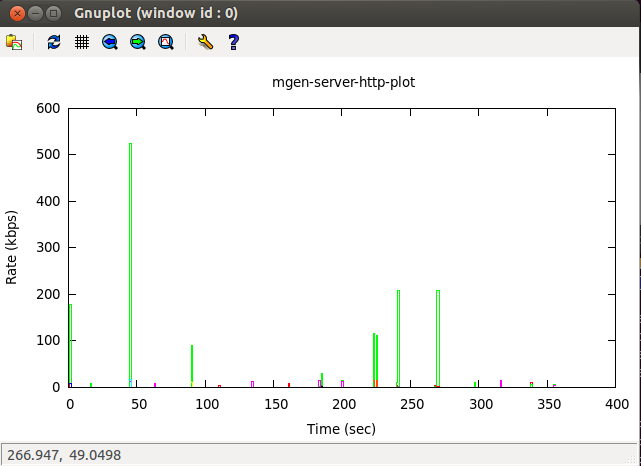

Abstract
The Real-time Application Representative (RAPR) is open source software developed by the Naval Research Laboratory (NRL) PROtocol Engineernig Advanced Networking (PROTEAN) group and was designed to emulate generic application performance on IP networks using both UDP and TCP transport mechanisms. RAPR can generate and respond to real-time network traffic in a manner closely tied to application behavior so that the network can be loaded in a variety of ways in a controlled and repeatable manner. It uses the Mgen toolkit (MGEN) to generate network traffic and supports most of the traffic shaping functionality available in Mgen Version 5.0. The network traffic can be logged for subsequent analysis and can be used to calculate performance statistics on throughput, packet loss rates, communication delay, and more.
Table of Contents
- 1. Introduction
- 2. Quick Links
- 3. Sample Application
- 4. Host ID, Initial Seed, & Repeatability
- 5. Unique Behavior Identifier (UBI)
- 6. Script synchronization.
- 7. RAPR System Defaults
- 8. RAPR Usage
- 9. Run-Time Interface
- 10. Behavior Event Table
- 11. Dictionary
- 12. RAPR Input Script Format
- 13. Behavior Events
- 13.1. Declarative Event
- 13.2. Interrogative Event
- 13.3. Stream Event
- 13.4. Periodic Event
- 13.5. Behavior Event Options
- 13.5.1. Protocol (UDP)
- 13.5.2. Destination (DST)
- 13.5.3. Source Port (SRC)
- 13.5.4. Pattern (PERIODIC, POISSON, BURST)
- 13.5.5. Count
- 13.5.6. Type-Of-Service (TOS)
- 13.5.7. Multicast Time-To-Live (TTL)
- 13.5.8. Socket Transmit Buffer Size (TXBUFFER)
- 13.5.9. Socket Receive Buffer Size (RXBUFFER)
- 13.5.10. Multicast Interface (INTERFACE)
- 13.6. Reception Events
- 14. Rapr Events and Global Commands
- 15. RAPR Log File Format
- 16. MGEN Log File Format
- 16.1. General Log Format
- 16.2. Log File RECV Events
- 16.3. Log File RERR Events
- 16.4. Log File SEND Events
- 16.5. Log File JOIN Events
- 16.6. Log File LEAVE Events
- 16.7. Log File LISTEN Events
- 16.8. Log File IGNORE Events
- 16.9. Log File ON Events
- 16.10. Log File CONNECT Events
- 16.11. Log File DISCONNECTED Events
- 16.12. Log File OFF Events
- 16.13. Log File START and STOP Events
- 17. Binary Log File Format
- 18. RAPR Message Payload
- 19. Known Bugs and Issues
The Real-time Application Representative (RAPR) is open source software developed by the Naval Research Laboratory (NRL) PROTocol Engineering Advanced Networking (PROTEAN) group and was designed to emulate generic application performance on IP networks using both UDP and TCP transport mechanisms.
RAPR can generate and respond to real-time network traffic in a manner closely tied to application behavior so that the network can be loaded in a variety of ways in a controlled and repeatable manner. It uses the Mgen toolkit (MGEN) to generate network traffic and supports most of the traffic shaping functionality available in Mgen Version 5.0. The network traffic can be logged for subsequent analysis and can be used to calculate performance statistics on throughput, packet loss rates, communication delay, and more.
RAPR behavior is defined by a RAPR input script, a behavior table, and RAPR run-time interface to handle RAPR commands over a run-time interface. The RAPR input script is used to schedule emulated application behavior over a time line. The RAPR run-time interface can be used to inject and schedule additional RAPR behaviors. The behavior table defines behavior in response to network or application generated events. Additionally a dictionary can be used to translate name-value pairs used by the application and scripts.
RAPR behavior events fall into three categories: Reception Events which direct RAPR to listen for specific network traffic, RAPR Events which direct the application itself (to load a dictionary for example), and Behavior Events which direct RAPR to emulate generic application behavior.
Behavior Events are rather elementary and mainly are responsible for initiating network traffic. The set of behavior events include:
- Declarative Events which send TCP or UDP (unicast or multicast) traffic to a destination address and complete.
- Interrogative Events which send TCP or UDP (unicast or multicast) traffic to a destination address and then wait for a response. If a response is not received within a specified time period, the Interrogative Event will resend the message.
- Stream Events which send UDP multicast traffic and wait for and react to responses from other nodes listening to the multicast address. Stream events are currently designed to facilitate Voice over IP traffic patterns and emulate "conversations".
- Periodic Events can be used to spawn other behavior event types (Declarative and Interrogative only) at regular intervals. These generated behavior events behave as independent events and have no relationship to one another.
It is the interaction between the generated network traffic initiated by these Behavior Events types and a target node(s) response as defined in its behavior tablethat together emulate network enabled application behavior. Generated traffic can be associated with a payload logic id that is used to direct the target node(s) response. The incoming payload logic id is then used to lookup any action to be taken in the receiving node's behavior table (e.g. respond with a declarative message, start a stream event object, etc.).
The principle tool is the RAPR program which can generate, receive, and log test traffic. This document provides information on RAPR usage, message payload, script, table, and log file formats. Additional tools are available to facilitate automated script file creation and log file analyses.
The following example shows how to set up a simple web server application with one node acting as the web server and another node acting as a web client.
The web server is modeled to be a simple stateless server that simply responds to various client requests. The web client drives the behavior by sending logic ids to the server that trigger its response, for example to return an "HTML web page". The traffic patterns are randomized such that the emulated behavior reflects the randomness of real traffic patterns but is repeatable.
The sample application models two behavior "patterns":
- The client requests an HTML web page. After the server returns a "web page", the client requests between one and three gif files.
- The client requests an HTML web page with a link to a file. The server responds with a file between 512 and 38192 bytes.
The steps in the sample application that model the client requesting an HTML web page are detailed below:
Note
The examples below will work if run co-located with the rapr binary. They are also included in the rapr distribution with a few minor changes as discussed in the distribution.
STEP 1 The client's input script initiates the "application" behavior by directing the client to send a single mgen message between 76 and 2048 bytes with a logic ID "1" to the server to emulate "requesting an html page". A PERIODIC object is used to repeat the behavior every 15 to 30 seconds for six minutes:
# Send a request every 15 to 30 seconds DURATION 360 PERIODIC INTERVAL %SYSTEM:RANDOMI(15,30)% DECLARATIVE TCP DST %SERVER:IP%/%HTTP_SERVER_PORT% PERIODIC [1 %SYSTEM:RANDOMI(76,2048)%] LOGICID 1 COUNT 1
STEP 2 The Server's behavior table directs it to return a TCP message between 76 and 2048 bytes to the sender of the triggering packet (%PACKET:SRCIP%) with a logic id of "2" in order to emulate "returning an html page":
<logicid>
<!-- Logic id 1 initiates the interaction between the client
and the server. It is sent from the client to the server
and directs the server to send a single TCP packet
or "web page" of random size with logic id 2
back to the client -->
<id>1</id>
<entry>DECLARATIVE TCP DST %PACKET:SRCIP%/%HTTP_CLIENT_PORT%
PERIODIC [1 %SYSTEM:RANDOMI(76,2048)%] COUNT 1 LOGICID 2</entry>
</logicid>STEP 3 Logic ID 2 in the client's behavior table causes it to send one to three more requests to the server (the originator of the packet referenced by %PACKET:SRCIP%), immediately upon receipt of the triggering packet with logic id 3. Note that the client has a 50 percent probability of making this second request:
<logicid>
<!-- Logic id 2 is sent from the server to the client.
It directs the client to send between 1 and 3
TCP messages (or "requests for gif files") back to
the server. These mesages(s) are associated with logic
id 3. Note that the client has a 50% probability
of making these requests. -->
<id>2</id>
<percent>0.5</percent>
<entry>DECLARATIVE TCP DST %PACKET:SRCIP%/%HTTP_SERVER_PORT%
POISSON [1 %SYSTEM:RANDOMI(76,2048)%] LOGICID 3 COUNT
%SYSTEM:RANDOMI(1,3)%</entry>
</logicid>STEP 4 The server then, immediately upon receipt of each message containing logic id 3, returns a tcp message between 512 and 38192 bytes to the client to emulate "sending a file":
<logicid>
<id>3</id>
<!-- Logic if 3 is sent from the client to the server.
It directs the server to send a single TCP message (or "file")
between 512 and 38192 bytes back to the client. It is
not associated with a logic id and "ends" the
interaction initiated by logic id 1. The server will
respond between 1 and 3 times depending on how many
"http requests" (or packets associated with logic id 3
it received from the client.-->
<entry>DECLARATIVE TCP DST %PACKET:SRCIP%/%HTTP_CLIENT_PORT%
POISSON [1 %SYSTEM:RANDOMI(512,38192)%] COUNT 1</entry>
</logicid>The server did not include a logic id in the payload directing the client to perform any further behavior so the traffic pattern ends.
Note that the server is "shutdown" 120 seconds into the test and will not reply to client requests until it is "restarted". The server input script uses the CHANGE_STATE command to affect this as illustrated in the web server input script.
The Web Server is configured to be a simple stateless server that simply responds to various client "requests". An input script must be defined to tell the RAPR application emulating the web server to "listen" for TCP traffic as well as to set default application parameters.
This simple input script directs the server to start listening for TCP traffic. All server behavior is response driven as defined in the logic table.
# Load the dictionary and logictable for the # http application. LOAD_DICTIONARY dictionary-http.xml LOGICTABLE_FILE logictable-http.xml # Set unique hostId per rapr participant - this will default to the # last octet of the node's ip address if not set HOSTID 2 OVERWRITE_MGENLOG mgen-server-http.log OVERWRITE_RAPRLOG rapr-server-http.log # Listen for HTTP requests LISTEN TCP %HTTP_SERVER_PORT% # Shutdown the server 120 seconds into the test 120.0 CHANGE_STATE %SERVER:STOPPED% # Start the server back up a minute later, at 180 seconds into the test 180.0 CHANGE_STATE %SERVER:STARTED%
This simple input script directs the client to start listening for TCP traffic. It initiates the emulated behavior via the PERIODIC behavior event. All server behavior is response driven as defined in the logic table.
# Load the dictionary and logictable for the # http application. LOAD_DICTIONARY dictionary-http.xml LOGICTABLE_FILE logictable-http.xml # Set unique hostId per rapr participant - this will default to the # last octet of the node's ip address if not set HOSTID 1 OVERWRITE_MGENLOG mgen-client-http.log OVERWRITE_RAPRLOG rapr-client-http.log # Listen for responses from the server Listen TCP %HTTP_CLIENT_PORT% # Send a request every 15 to 30 seconds DURATION 360 PERIODIC INTERVAL %SYSTEM:RANDOMI(15,30)% DECLARATIVE SRC 5000 TCP DST %SERVER:IP%/%HTTP_SERVER_PORT% PERIODIC [1 %SYSTEM:RANDOMI(76,2048)%] LOGICID 1 COUNT 1
A common dictionary is used by both the http client and server.
<RaprDictionary>
<namespace>
<label>DEFAULT</label>
<item>
<field>HTTP_SERVER_PORT</field>
<value>8000</value>
</item>
<item>
<field>HTTP_CLIENT_PORT</field>
<value>8001</value>
</item>
</namespace>
<!-- Dictionary entries in the server name space should -->
<!-- be referred to as %SERVER:<FIELDNAME>%, e.g. -->
<!-- %SERVER:IP% -->
<namespace>
<label>SERVER</label>
<item>
<field>IP</field>
<value>10.0.0.2</value>
</item>
<item>
<field>STARTED</field>
<value>0</value>
</item>
<item>
<field>STOPPED</field>
<value>1</value>
</item>
</namespace>
</RaprDictionary>
A common logic table is used by both the http client and server.
<RaprLogicTable>
<state>
<!-- Default state, SERVER:STARTED -->
<value>0</value>
<logicid>
<!-- Logic id 1 initiates the interaction between the client
and the server. It is sent from the client to the server
and directs the server to send a single TCP packet
or "web page" of random size with logic id 2
back to the client -->
<id>1</id>
<entry>DECLARATIVE TCP DST %PACKET:SRCIP%/%HTTP_CLIENT_PORT% PERIODIC
[1 %SYSTEM:RANDOMI(76,2048)%] COUNT 1 LOGICID 2</entry>
</logicid>
<logicid>
<!-- Logic id 2 is sent from the server to the client.
It directs the client to send between 1 and 3
TCP messages (or "requests for gif files") back to
the server. These mesages(s) are associated with logic
id 3. Note that the client has a 50% probability
of making these requests. -->
<id>2</id>
<percent>0.5</percent>
<entry>DECLARATIVE TCP DST %PACKET:SRCIP%/%HTTP_SERVER_PORT% POISSON
[1 %SYSTEM:RANDOMI(76,2048)%] LOGICID 3 COUNT %SYSTEM:RANDOMI(1,3)%</entry>
</logicid>
<logicid>
<id>3</id>
<!-- Logic if 3 is sent from the client to the server.
It directs the server to send a single TCP message (or "file")
between 512 and 38192 bytes back to the client. It is
not associated with a logic id and "ends" the
interaction initiated by logic id 1. The server will
respond between 1 and 3 times depending on how many
"http requests" (or packets associated with logic id 3
it received from the client.-->
<entry>DECLARATIVE TCP DST %PACKET:SRCIP%/%HTTP_CLIENT_PORT% POISSON
[1 %SYSTEM:RANDOMI(512,38192)%] COUNT 1</entry>
</logicid>
</state>
<state>
<!-- The server script issues a CHANGE_STATE
command at 120 seconds into the test. When
the server is in this state (SERVER:STOPPED)
it will not respond to any requests from the
client. At 180 seconds into the test the
server changes state back to SERVER:STARTED and the
logic defind for SERVER:STARTED (state 0)
will be followed-->
<value>1</value>
<logicid>
<!-- Server shut down - no response -->
<id>0</id>
<entry></entry>
</logicid>
</state>
</RaprLogicTable>
NRL's TRPR application can be used to create a gnuplot with the following command: (By default trpr will log send data only. Add the "send" and "recv" data options to log both SEND and RECV data.)
./trpr mgen input mgen-server-http.log auto X output mgen-server-http.plot Display the plot file via: gnuplot -persist mgen-server-http.plot
Display the plot file via:
gnuplot -persist mgen-server-http.plot
This is plot of the application behavior:

Application "best practices" are discussed below. Some of these are illustrated in the sample applications in the rapr distribution.
The initial seed used by all random behaviors in the system can be set via either the INTITIAL_SEED command or the HOSTID command. The first of these commands encountered will be used to initialize the seed used by the random number generator. If neither is set, the HOSTID will default to the last octet of the node's ip address and this value will be used as the initial seed. Doing so is not recommended however, as this assignment will not occur until AFTER any other scripted behaviors are processed and seeding may not work properly. It should be set prior to any other commands. Either as an event, e.g.:
./rapr event "HOSTID 1" input <inputScript>
or as the first entry in an input script
HOSTID 1 ....
INITIAL_SEED 10001 HOSTID 1
Use a default input script to defined rapr attributes common to all applications.
# This input script sets the defaults for # all rapr apps in the examples directory # Log only error conditions DEBUG 0 # Enable verbose logging VERBOSE # Enable transmission logging TXLOG # Flush the log immediately FLUSH # Load default dictionary LOAD_DICTIONARY /home/rapr/rapr-scripts/rapr-default-dictionary.xml
Use a default dictionary to define common dictionary translations.
<RaprDictionary>
<namespace>
<label>SystemDefaults</label>
<!-- Application wide defaults -->
<item>
<field>SCRIPT_PATH</field>
<value>/home/rapr/rapr-scripts</value>
</item>
<item>
<field>HTTP_EXAMPLE_PATH</field>
<value>%SCRIPT_PATH%/simple-http-example</value>
</item>
<item>
<field>HTTP_LOG_PATH</field>
<value>%HTTP_EXAMPLE_PATH%</value>
</item>
</namespace>
</RaprDictionary>As illustrated by the sample applications in the rapr source, the use of such conventions can simplify scripting. By default, RAPR will look in the current directory for input files. Given the default dictionary and input scripts discussed above, an application author need not redefine common defaults and directory paths in each script. For example given an application input script "http-server.input" located in the "application" directory (in these examples /home/rapr/rapr-scripts/simple-http-example):
# Load the default rapr dictionary that defines # paths and other system defaults. If this script # is not co-located with the rapr binary specify # a path INPUT rapr-defaults.input # Load the dictionary and logictable for the # http application. LOAD_DICTIONARY %HTTP_EXAMPLE_PATH%/dictionary-http.xml LOGICTABLE_FILE %HTTP_EXAMPLE_PATH%/logictable-http.xml # Accept rapr commands over "rapr-server" pipe RAPRPIPE rapr-server # Uncomment the following lines to log mgen and/or rapr # logging to an output file. The OVERWRITE_<type>LOG command # will overwrite any existing log files. The <type>LOG command # will append to any existing log file. OVERWRITE_MGENLOG %HTTP_LOG_PATH%/mgen-server-http.log OVERWRITE_RAPRLOG %HTTP_LOG_PATH%/rapr-server-http.log .... <rest of script>
the "application" could be run as:
cd /home/rapr/rapr-scripts ./rapr event "HOSTID <n>" input simple-http-example/http-server.input
RAPR uses a random number generator that can be seeded such that RAPR behavior and traffic patterns can be controlled and be repeatable across multiple scenario runs. Seeds are embedded within RAPR messages so that network initiated behavior is also repeatable. Likewise, the initial seed value can be changed so that multiple runs of the same scenario results in variable behavior and traffic patterns.
RAPR will use the hostid to seed the random number generator unless an INITIAL_SEED value is provided. If no INITIAL_SEED or hostid is specified, the default HostID (the last octet of the IP address) will be used as the initial seed value.
The INITIAL_SEED or the HOSTID should be sent to rapr via the event command before the input file is processed, or be included as the first line in the input script such that subsequent behaviors are seeded correctly. Whichever command received first is used as the seed. NOTE: if no initial_seed or hostid is set prior to input script processing no initial_seed is available for seeding entries in the script.
Note that hostid is also used by the RAPR application to identify it's own network traffic and as such must be unique within a set of interoperating rapr applications. Currently the maximum hostid allowed is 255.
Important: INITIAL_SEED and hostid must be specified as the first entries in an input script as subsequent commands may require that random number draws be made. INITIAL_SEED should always be specified first (if set), followed by hostid (if set).
Each behavior event created by RAPR is associated with a Unique Behavior Identifier (UBI) that serves to uniquely identify behavior "events" in the system. Behavior events manage and control message transmission and reception and other "system behaviors" (e.g. load a dictionary file, join/leave a multicast group).
It is also embedded in the payload of messages sent by interrogative events and is used by a RAPR instance to identify its own message traffic or responses to its own solicitations.
For example, RAPR will embed a UBI in messages to which it expects a response. Interrogative objects that are soliciting a reply will do this for example. In the following log file message, the UBI is the first field in the RAPR data. (0104-01000073 is the hex equivalent of a ubi "1929379841").
11:45:40.277483 app>RAPR type>Interrogative action>start ubi>1929379841 \
eventSource>script_event cnt>0 mgenCmd>"ON 1 UDP SRC 6000 DST \
192.168.1.103/5000 PERIODIC [1 1024 ] DATA [010401000073020403000000\
0304CBE4A304]"When the target RAPR responds to this message, it will embed the (now) "foreign ubi" in the payload of its responses.
15:45:40.284519 RECV proto>UDP flow>1 seq>1 src>192.168.1.103/33923 \
dst>192.168.1.102/6000 sent>15:45:40.282034 size>1024 gps>INVALID,\
999.000000,999.000000,-999 data>12:0304B0F08102040401000073The RAPR receiving this response packet then looks for the interrogative object associated with this "foreign ubi" that is waiting for a reply. If it finds one, the "transaction" is considered successful and no further messages are sent.
To assist in starting application or "scenario" scripts across a network, RAPR provides a START command that designates an absolute start time. This <hour:min:sec> field corresponds to the relative script time of 0.0 seconds. All transmission and reception events will be scheduled relative to this absolute start time. The optional GMT suffix (no white space after the time) indicates that the clock time given is Greenwich Mean Time (GMT) rather than the operating systems local time zone. If no START command is given, RAPR schedules transmission and reception events relative to program startup. For example:
#Start RAPR exactly at 1:30PM local time START 13:30:00 #Start RAPR at 30 seconds past 8:30 START 8:30:30GMT
When specifying an absolute start time, it is important that the system clocks of network nodes be synchronized via a time protocol such as NTP or GPS.
The RAPR application provides certain application wide default values. In addition, a "default" dictionary is provided in the RAPR distribution that can be used to override these application wide default values. If no default dictionary is loaded into a running RAPR application via a "LOAD_DICTIONARY" command RAPR will default to using the values as specified in the table below. The "dictionary Field" columns lists the dictionary field names that must be used in the DEFAULT system name space. The "system value" lists the internal application wide default that can be overridden in the default dictionary.
The default dictionary is included in the RAPR distribution in the unix directory. It is called "raprDictionary.xml".
Table 1. Default Dictionary
| Dictionary Field | System Value | Comments |
|---|---|---|
| RETRYINTERVAL | 10 | The default retry interval used by an interrogative object if no RETRYINTERVAL attribute is specified. |
| NUMRETRIES | 3 | The default number of retries used by an interrogative object if no NUMRETRIES attribute is specified. |
| PATTERN | PERIODIC [1 1024] | The default mgen flow pattern that is used for all behavior events when no PATTERN is specified. |
| STREAMDURATION | .99 | The default stream duration that is used by the interrogative object for each message query or as the default duration for declarative objects. See the object definitions for more details on how this interval is used/calculated. |
| PROTOCOL | UDP* | The default protocol to be used by all behavior events. Note that this default can only be set in the default dictionary. No internal default PROTOCOL is set system wide. If no entry is set specified in the default dictionary, the PROTOCOL must be set on the command line for each behavior event. |
The RAPR version 1.x program must currently be launched from a command-line. To launch RAPR, use the following command-line syntax:
RAPR [input <scriptFile>]
[overwrite_raprlog <logFile>]
[raprlog <logFile>]
[overwrite_mgenlog <logFile>]
[mgenlog <logFile>]
[binary]
[event "<RAPR event>"]
[instance <name>]
[offset <offsetTime>]
[start <startTime>]
[verbose]
[enable_load_emulator]
[initial_seed <initial_seed>]
[hostid <hostid>]
[txlog]
[nolog]
[flush]
[interface <interfaceName>]
[ttl <timeToLive>]
[tos <typeOfService>]
[label <value>]
[txbuffer <txSocketBufferSize>]
[rxbuffer <rxSocketBufferSize>]
[txcheck]
[rxcheck]
[check]
[stop]
[debug <debugLevel>]
Most of these command-line options can also be included in the RAPR input script.
Some of these command-line options can also be included in RAPR script files as "global" commands or defaults. Note the command-line (or commands sent via RAPR's remote control interface) will always override settings from script files.
| input <scriptFile> | Causes RAPR, to parse the given <scriptFile> at startup and schedule any transmission or reception events given in the script. |
| overwrite_raprlog <logFile> | Causes RAPR to output RAPR behavior event and application information to the indicated <logFile>. By default, RAPR will log to stdout. With the overwrite_raprlog command, an existing <logFile> of the same name will be overwritten. Use the raprlog command to append to an existing log file. Some application errors are only logged to stdout. |
| raprlog <raprlog> | This is the same as the overwrite_raprlog command except that if <logFile> already exists, it will be appended instead of replaced. |
| overwrite_mgenlog <logFile> | Causes RAPR to output mgen traffic information to the indicated <logFile>. By default, RAPR will log to stdout. With the overwrite_mgenlog command, an existing <logFile> of the same name will be overwritten. Use the mgenlog command to append to an existing log file. |
| mgenlog <mgenlog> | This is the same as the overwrite_mgenlog command except that if <logFile> already exists, it will be appended instead of replaced. |
| binary | Causes RAPR to save mgen output logging information in a smaller-sized binary file format. This option should come before the mgenlog or overwrite_mgenlog or log commands. |
| event "<RAPR event>" | The event command allows the user to enter the equivalent of RAPR script lines into RAPR via the command-line. Multiple event commands can be used to pass the equivalent of a multi-line script to RAPR. Note that RAPR script events generally contain spaces and thus must be encapsulated in quotes on the command line. Note that the <eventTime> may be omitted and the action indicated by the event will be taken by RAPR immediately. |
| instance <instanceName> | If a pre-existing RAPR application instance is _not_ already running, this command registers the running RAPR program as an instance identified by the <instanceName>. On UNIX, this corresponds to a Unix-domain datagram socket named "/tmp/<instanceName>" being opened and monitored for RAPR commands These interprocess channels allow for run-time control of RAPR processes. If an application instance as identified by the <instanceName> parameter is already running, any subsequent command-line options are transmitted to the remote instance already running, and the new RAPR instance will then exit.This allows run-time control of possibly multiple background RAPR instances from the "shell" or via scripting. The event command may be used to dispatch RAPR script events to RAPR instances at run-time. |
| offset <sec> | Causes RAPR to skip <sec> seconds of relative time into the execution of the script file used. Note that if an absolute start time is given using the start command, the offset into the script will correspond to that absolute time. The default offset for RAPR is 0.0 seconds. |
| start <hr:min:sec>[GMT] | Causes RAPR to delay processing events in script file relative to the indicated absolute time. The optional "GMT" keyword indicates the time is Greenwich Mean Time instead of the default local time. This command establishes an absolute time for the relative script time of 0.0 seconds. |
| verbose | This causes raprlog output to be more verbose. |
| enable_load_emulator | This enables application load emulation functionality in the RAPR application. This feature is not fully implemented. |
| hostid | This command specifies the HOSTID to be used by RAPR. Although available as a command-line option, it is not recommended to be used this way as it will be overwritten by any subsequent HOSTID definitions in the input script if specified. HOSTID is embedded in unique behavior identifiers (see CHANGE_UBI_STATE for more information on UBI) that are used by the RAPR application to identify it's own network traffic and as such must be unique within a set of interoperating RAPR applications. If no HOSTID command is specified, the application will use the DEFAULT hostId as indicated by the node's local ip address. For example, given an ip address of 192.168.1.103, "103" will be used as the hostid if not overridden by the HOSTID command. |
| initial_seed | This command specifies the default initial seed used by RAPR. If not specified, the DEFAULT host id as indicated by the node's local ip address will be used as the initial_seed value. |
| txlog | This enables transmission logging. This results in transmitted network events being added to the log file every time a packet is sent by RAPR (MGEN). |
| nolog | This disables mgen logging completely. |
| flush | This causes the output log file to be flushed with each line written. This is useful for real-time monitoring of RAPR logging |
| interface <interfaceName> | Causes RAPR to set the default network interface for IP multicast and/or root node flow transmission to <interfaceName>. <interfaceName> will override any default interface specified within an RAPR script file. <interfaceName> is a "per socket" attribute, and in its absence, RAPR will behave according to the operating system's default behavior. |
| ttl <timeToLive> | Causes RAPR to set the hop count for IP multicast traffic generated by RAPR. <timeToLive> will override any default ttl indicated within an RAPR script file. <timeToLive> is a "per socket" attribute. If no ttl option is used, RAPR will behave according to the operating system's default behavior. |
| tos <typeOfService> | Causes RAPR to set the IPv4 type-of-service field (within the packet header) to <typeOfService>. <typeOfService> will override any default tos indicated within an RAPR script file. As with ttl and interface, tos is a "per socket" attribute. If no tos option is used, RAPR will behave according to the operating system's default behavior. |
| label <value> | Causes RAPR to set <value> as the default flow label for IPv6 flows. The <value> corresponds to the 28-bit IPv6 flow label field and may be specified in decimal or hex. |
| txbuffer <bufferSize> | Causes RAPR to set the socket transmit buffer size to a value Òat leastÓ as large as <bufferSize>. If <bufferSize> is larger that the maximum allowed by the system, <bufferSize> will be set to the system maximum. |
| rxbuffer <bufferSize> | Causes RAPR to set the socket receive buffer size to a value Òat leastÓ as large as <bufferSize>. If <bufferSize> is larger that the maximum allowed by the system, <bufferSize> will be set to the system maximum. |
| txcheck | Causes RAPR to include an optional 32-bit cyclic redundancy checksum (CRC) at the end of its messages. The CHECKSUM flag is set to indicate the presence of the checksum content. |
| rxcheck | Forces RAPR receivers to validate the checksum portion (last 4 bytes) of RAPR messages whether or not the CHECKSUM flag is set in the RAPR flags message field. Use this option when it is _known_ that the RAPR sender is supplying checksums to cover the case when the flags field itself is possibly corrupted. |
| check | Sets RAPR behavior as if both the txcheck _and_ rxcheck commands were applied. This is the recommended option when RAPR checksum operation is desired so that both senders and receivers are providing and validating checksums, respectively. |
| stop | This command causes RAPR to exit. This is useful for run-time control of RAPR instances. |
All RAPR commands and behavior events can be scripted in both lower case and upper case, e.g. both the following formats are acceptable:
DECLARATIVE UDP SRC 5000 DST 192.168.1.100/6000 declarative udp src 5000 dst 192.168.1.100/6000
Shorthand notation is available for certain attributes, e.g.
DECLAR DST 192.168.1.100/5000 INTERR DST 192.168.1.100/5000
To run RAPR with script file "script.mgn" and log to stdout (by default):
RAPR input script.mgn
The "event" command can be used to invoke RAPR commands with the command-line syntax:
RAPR event "listen udp 5000,5004-5006" mgenlog log.mgn
The "event" command allows for use of RAPR without script files for "quick and dirty" runs. RAPR is capable of being dynamically scripted during run time with "event" commands passed to RAPR via inter-process communication (see RAPR Run-Time Remote Control.
To use the RAPR "remote control interface":
Start one (or more) instance(s) of RAPR to control, either by the command line: RAPR instance RAPR1 or by the RAPRPIPE command in a RAPR input script.
Subsequent invocations of RAPR with the same instance name will pass provided commands to the first instance and then exit: (Note that the quotes around the event definition are required.)
RAPR instance RAPR1 event "0.0 DECLARATIVE UDP DST 127.0.0.1/5000 PERIODIC [1 1024]"
The second instance (Step #2) will exit after it has passed its commands to the first running instance as identified by the <instanceName>. Note this can allow run-time control of multiple RAPR instances by user(s), shell scripts, or other processes. A programmer comfortable with use of Unix-domain sockets or using the NRL Protolib "ProtoPipe" C++ class can also write software for run-time control of RAPR processes.
Specifying a 0.0 start time for the events will cause the behavior event to start immediately, e.g. as soon as the event is parsed. Otherwise the event will be scheduled relative to the running rapr's offset time.
The Behavior Event Table, sometimes referred to as "a logic table " is used to define a node's response to a logic id. The behavior associated with a logic id in the behavior event table is the same as that that can be defined in an input script or over the run-time interface, e.g. behavior events,reception events, and rapr events. The logic id may come from the following triggering events:
- a payload logic id of an incoming network packet
- a LOGICID RAPR event command
- from a SUCCESS, TIMEOUT, or FAILURE logic ID associated with a local behavior event .
The behavior event table is created when a behavior event XML file is parsed. The format of this XML file is (briefly):
<RaprLogicTable> <state> <value>STATE</value> <logicid> <id>ID</id> <percent>PERCENT</percent> <entry>ENTRY</entry> <entry>ENTRY</entry> </state> </RaprLogicTable>
The <state> XML tag forms a block around logic id's that can be used when the RAPR application is in that system state. Multiple state blocks can be defined in the same file.
State value has the format <globalState,ubiState>. See ubi state for more information on the use of the optional ubi state attribute. <globalState> has the format <x.y.z> where x,y, and z are integers. If no <state> tag is defined, only the default state <0> will exist. System state is changed by the CHANGE_STATE rapr event command.
For legibility, the dictionary's function can be used to translate the state value from a more readable english format to its integer counterpart. (E.g. global state might be defined as <SHUTTING_DOWN> in the behavior table rather than n.n.n).
<RaprLogicTable>
<state>
<value>%SHUTTING_DOWN%</value>
<logicid>
<id>2</id>
<entry>CHANGE_STATE %STOPPED%</entry>
</logicid>
</state>
<state>
<value>2.2.0</value>
<logicid>
<id>2</id>
<entry>CHANGE_STATE %STARTED%</entry>
</logicid>
</state>
</RaprLogicTable>
See additional notes on UBI state below.
The <logicid> tag forms a block around the <behavior(s)> to be performed when the specified ID is recieved when the system is in the state corresponding to the surrounding <state> block. The ID is the integer id value assigned to the logicid tag and is a required field.
PERCENT is an optional field that defines the probability of triggering the event. The percentage is a float between 0 and 1. If the value is not defined, a 1 is assigned as the default, (always do the behavior). The seed of the triggering event is used to calculate the probability of response.
ENTRY is the tag that identifies the behavior to invoke in response to the logic ID. Multiple entries can be specified for a given logic id. A minimum of one entry is required, there is no maximum limit. The format of the specified behavior events is the same as that defined for the input script or over the run-time interface, e.g. behavior events,reception events, and RAPR events.
Important: Specifying a 0.0 start time for the events will cause the behavior event to start immediately, e.g. as soon as the event is parsed. Otherwise the event will be scheduled relative to the current offset time.
For example, if the test offset time is 10 seconds, a behavior event specified in the table to start at time 5.0 would start in 5 seconds, at test time 15.0. Any event in which NO start time is specified would be scheduled to start at test time 10.0 seconds. Note that his may result in additional behaviors being scheduled prior to the given event. It is particularly important to fully specify a 0.0 start time when doing state changes in order to control the ordering in which multiple events are enqueued.
<RaprLogicTable>
<state>
<value>0.0.0</value>
<logicid>
<id>1</id>
<entry>STOP 5.0 DECLARATIVE UDP SRC 5001
DST 192.168.1.102/5000
PERIODIC [1 2048] LOGICID 9</entry>
</logicid>
<logicid>
<id>5</id>
<percent>0.8</percent>
<entry>DECLARATIVE UDP SRC 6001 DST %PACKET:SRCIP%/5001
LOGICID 11 SEED %PACKET:SEED%</entry>
</logicid>
<logicid>
<id>8</id>
<entry>DECLARATIVE UDP SRC 5001 DST 192.168.1.102/5000</entry>
<entry>DURATION 10.0 INTERROGATIVE RETRYINTERVAL 1.0
NUMRETRIES 5 UDP SRC 5001 DST 192.168.1.100/5000
PERIODIC [1 2048] FAILURE 4</entry>
</logicid>
</state>
<RaprLogicTable>
Word replacement is supported in the behavior table xml file so that scripting of the logic table is more legible and more easily standardized across multiple machines using a common dictionary. For example, given a dictionary translation defined as:
<item>
<field>TN-61</field>
<value>192.168.2.61</value>
</item>
The behavior table <entry> of:
<entry>DECLARATIVE UDP SRC 6001 DST %TN-61%/5001 LOGICID 11
Would be translated to:
DECLARATIVE UDP SRC 6001 DST 192.168.2.61/5001 PERIODIC [1 1024] LOGICID 11
as the logic table is interpreted.
The dictionary's namespace feature can also be used to differentiate common dictionary names. For example, the IP address of the incoming packet and the IP address of the machine might both be referred to as <SRCIP>. The PACKET namespace (that is reserved for information stored in the incoming packet) could be used to refer to the IP address of the incoming packet. For example:
DECLARATIVE UDP SRC 6001 DST %PACKET:SRCIP%/5001 PERIODIC [1 2048] LOGICID 11
See dictionary for more information
UBI is an unique behavior identifier associated with each behavior triggered by the script or logic table. The idea behind UBI State is to be able to handle multiple packet requests and retries (from an INTERROGATIVE event that did not successfully receive a response packet for example).
An example might best illustrate an application of this functionality: Node A requests a response from Node B. Node B is configured to respond to the request with an "acknowledgement" (or single declarative response) and after a random interval, to send a "file" (a multi-packet declarative response) back to the Node A. When Node B receives the triggering request, it should respond with the acknowledgement and schedule the transmission of the file after the random interval.
Without using UBI state change functionality, if Node A did not not receive the initial acknowledgement, and retransmitted a second request for the information, Node B would respond with a second acknowledgement and schedule the transmission of a second file after a random interval.
UBI State change can be used to direct Node B to "remember" that is has already successfully received the initial response. When Node B receives the first response, it can change the state associated with the initial message, so that any subsequent responses only generate "acknowledgements" of the request, not additional file responses (if that is the desired behavior).
Every action received will start at UBI State 0. A change in the UBI state of each action can be accomplished by a "CHANGE_UBI_STATE %packet:ubi% x" command where x is the new UBI State. This command is only available in the Logic Table as it only pertains to incoming data packet. The idea is to be able to determine whether a request from an interrogative event has already been acted upon or is it the first time encountering the packet.
<RaprLogicTable>
<state>
<value>STATE,UBI_STATE</value>
<logicid>
...
<logicid>
</state>
</RaprLogicTable>
Note
The ~first~ packet received associated with an interrogative object's ubi will trigger the interrogative object to "succeed" and any logic id associated with this ~first~ packet will be processed.
Likewise, any logic id's associated with any subsequent packets will be processed, which may be sent by different data streams - e.g. two declaratives responding to the initial interrogative query that are associated with payload logic id's.
Note that if the user is relying on any ubi state changes to effect behavior - he must take care that he provisions for both logic id's in both table states and consider the order in which they may arrive, and the state of the table in which they arrive. E.g. if one logic id causes a ubi state change - all subsequent logic id's received that are associated with that ubi will be looked up in the ubi state table.
The Dictionary can be used to translate name-value pairs used in the event definitions in the input script and behavior table. The dictionary is created when the dictionary XML file is parsed. The format of this XML file is (briefly):
<RaprDictionary> <namespace> <label>NAMESPACENAME</label> <item> <field>FIELDNAME</field> <value>VALUE1</value> <value>VALUE2</value> </item> </namespace> </RaprDictionary>
The NAMESPACE tag is used to differentiate common dictionary names that can be referenced by the format %NAMESPACE-LABEL:VALUE-NAME%. In the event that %VALUE-NAME is not specified in the given namespace, the replacement will be the first match of the field name over all the namespaces. (See reserved namespaces for more namespace options.) For example, given a namespace definition of:
<namespace>
<label>HOST</label>
<item>
<field>SRCIP</field>
<value>192.168.1.2</value>
</item>
</namespace>
%HOST:SRCIP% will be translated to the value "192.168.1.2"
FIELDNAME is the name of the word to be replaced without the % surrounding the word. %DESTINATION% in the following example would be translated to "192.168.2.102". This is a required field.
<namespace>
<label>DEFAULT</label>
<item>
<field>DESTINATION</field>
<value>192.168.2.102</value>
</item>
</namespace>
The VALUE entry should contain the values used to replace the field. Multiple values can be assigned to the same field. Each will be used to create an independent statement. Null is a valid entry for the value. One or more values are required. Given the example:
<namespace>
<label>DEFAULT</label>
<item>
<field>LOCALHOST</field>
<value>127.0.0.1</value>
</item>
<item>
<field>DESTINATION</field>
<value>192.168.2.102</value>
<value>192.168.2.103</value>
</item>
</namespace>
and given an event definition of:
DECLARATIVE UDP SRC 5000 DST %DESTINATION%/5001
TWO events would be created as there are TWO values associated with the %DESTINATION% field name. There is no dependence or interaction between the two statements, both are treated as if they were separately declared to begin with.
DECLARATIVE UDP SRC 5000 DST 192.168.2.102/5001 PERIODIC [1 1024] DECLARATIVE UDP SRC 5000 DST 192.168.2.103/5001 PERIODIC [1 1024]
The HOSTID keyword will be translated to the HOSTID assigned in the input script. (Note that the HOSTID will be automatically added to the dictionary, and any existing HOSTID value will be replaced). The functionality facilitates having common script/logictable syntax across multiple nodes where appropriate. Dictionary lookups my then be made as follows:
Given HOSTID=63, a dictionary translation of the string:
%%HOSTID%FIELD%
Would lookup 63FIELD in the dictionary:
<name>63FIELD</name> <value>FIELD_VALUE</name>
Nested dictionary translations within a field name are supported. The value of the nested field will be associated with the non-nested field name to lookup the final value(s). Given dictionary entries of:
<name>NESTED_FIELD</name> <value>VALUE_OF_NESTED_FIELD</value> <name>VALUE_OF_NESTED_FIELD-NON_NESTED_FIELD</name> <value>FINAL_VALUE
The script/logictable entry of:
%%NESTED_FIELD%-NON_NESTED_FIELD%
would be translated as:
FINAL_VALUE
Currently the PACKET namespace is reserved for information contained in an incoming MGEN packet. Information supported in the PACKET namespace includes:
- PACKET:SRCIP - Source ip address as defined by the MGEN source field
- PACKET:SRCPORT - Source port as defined by MGEN source field
- PACKET:DSTIP - Destination IP of the MGEN packet
- PACKET:DSTPORT - Destination Port of the MGEN packet
- PACKET:SEED - Random seed stored in the RAPR packet payload
DECLARATIVE UDP SRC 5000 DST %PACKET:SRCIP%/%PACKET:SRCPORT% PERIODIC [1 2048]
The SYSTEM namespace keyword should be used to access the RANDOMI(n,n) and RANDOMF(n,n,[z]) functions. These functions will return a random integer or a random float value within a specified range. In the RANDOMF function, z is an optional argument and specifies the number of decimal places the float should have. By default, 1 decimal place is generated. For example, the functions at the beginning of a declarative declaration:
%SYSTEM:RANDOMI(5,10)% DECLARATIVE UDP SRC ... %SYSTEM:RANDOMF(5,10,1)% DECLARATIVE UDP SRC ...
would result in a start time between 5 and 10 seconds. The SEED associated with the triggering event will be used to seed the random number generator used by the random function.
The SystemNamespace namespace is reserved for application wide defaults.
The RAPR application provides certain application wide default values. In addition, a "default" dictionary is provided in the RAPR distribution that can be used to override these application wide default values. If no default dictionary is loaded into a running RAPR application via a "LOAD_DICTIONARY" command RAPR will default to using the values as specified in the table below. The "dictionary Field" columns lists the dictionary field names that must be used in the DEFAULT system name space. The "system value" lists the internal application wide default that can be overridden in the default dictionary.
Table 2. Default Dictionary
| Dictionary Field | System Value | Comments |
|---|---|---|
| RETRYINTERVAL | 10 | The default retry interval used by an interrogative object if no RETRYINTERVAL attribute is specified. |
| NUMRETRIES | 3 | The default number of retries used by an interrogative object if no NUMRETRIES attribute is specified. |
| PATTERN | PERIODIC [1 1024] | The default mgen flow pattern that is used for all behavior events when no PATTERN is specified. |
| STREAMDURATION | .99 | The default stream duration that is used by the interrogative object for each message query or as the default duration for declarative objects. See the object definitions for more details on how this interval is used/calculated. |
| PROTOCOL | UDP* | The default protocol to be used by all behavior events. Note that this default can only be set in the default dictionary. No internal default PROTOCOL is set system wide. If no entry is set specified in the default dictionary, the PROTOCOL must be set on the command line for each behavior event. |
In the default distribution, the default dictionary raprDictionary.xml is located in the rapr/unix directory. By default, the SystemNamespace in this dictionary specifies all the attributes listed above. Note that these are the same values that will be used by the system even if NO default dictionary is loaded. The following is an example of a default dictionary with only the default protocol and the number of retries specified. All other defaults will revert to those specified internally by the application.
<RaprDictionary>
<namespace>
<label>SystemNamespace</label>
<!-- Application wide defaults -->
<item>
<!-- Default number of retries for interrogative events -->
<field>NUMRETRIES</field>
<value>5</value>
</item>
<item>
<!-- Default protocol for all events -->
<field>PROTOCOL</field>
<value>UDP</value>
</item>
</namespace>
</RaprDictionary>
RAPR scripts are text files containing a sequence of commands and scheduled events describing traffic generation patterns, ports and/or multicast groups to be monitored, and other options. Each line in the script corresponds to either a RAPR Event (note that many RAPR Events are Global Events), or a Reception Event , or a Behavior Event. Lengthy script lines can be continued to multiple text file lines by using a trailing backslash '\' character at the end of the line. Additionally, blank lines are permitted and comment lines can be included by providing a leading '#' character at the beginning of lines. (Note comment lines cannot be inserted in between "continued" script lines).
Scheduled events in the script use lines in the format of:
[<eventTime>] <eventType> <parameters ...> [<options...>]
These "events" are scheduled to be executed by RAPR at the relative time given by the <eventTime> field. The value of this field is a floating point number which denotes the relative time (in seconds) of the associated event. The time is relative to the start of the RAPR program or the time dictated by the global START command. If the <eventTime> is omitted, an <eventTime> of 0.0 (or immediately if RAPR is already started) is assumed. RAPR Event (or global commands) are generally used to define default behaviors for RAPR operation or other options independent of event scheduling.
The format for global command script lines is: <commandType> [<command parameters ...>]
RAPR "Behavior Event" script lines are used to schedule and characterize RAPR traffic generation. An instance of RAPR can simultaneously transmit traffic to multiple destinations with different patterns of transmission. The three main types of behavior events are Declarative, Interrogative, and Stream events.
Script syntax:
[<eventTime>] [STOP <0.0> | DURATION <0.0>] [RAPRFLOWID <raprFlowId>]
DECLARATIVE <protocol>
[SRC <srcPort>]
DST <dst-ip>/<dstPort> [<validMgenPattern [params]>]
[SUCCESS <success_logid_id>] [FAILURE <failure_logic_id>]
[PAYLOAD|LOGICID <payload_logic_id>] [TIMEOUT <timeout_logic_id>]
[TTL <timetolivevalue>] [TOS <tos>]
The DECLARATIVE keyword directs RAPR to create a behavior event that starts either a UDP or a TCP flow to a unicast or multicast destination for a given duration and does not expect a response. At the specified (or implied) end time it stops the flow.
The STOP attribute means stop the event (in this instance, meaning the mgen flow initiated by the specified mgen pattern) at time relative to start time. E.g. if event start time offset was 5.0, a STOP 10.0 would stop the event at 10 seconds relative to test start time.
Conversely, the DURATION attribute specifies the duration of the event regardless of start offset time. E.g. if the event start offset was 5.0, a DURATION 10.0 would stop the event after 10 seconds, at 15 seconds relative to test start time.
If no STOP or DURATION is specified, COUNT will default to 1 and one message will be sent. If a COUNT is specified but no STOP nor DURATION is, the behavior will stop after COUNT * pattern interval. If both COUNT and a STOP or DURATION is specified, the first limit to be reached will stop the flow.
Finally, if either STOP or DURATION is set to -1.0 no stop time will be set for the flow and the flow will continue indefinately unless the flow is subseqently stopped via a RAPRFLOWID command or the RAPR
If either STOP or DURATION is set to -1.0 no stop time will be set for the flow and the flow will continue indefinately unless the flow is subseqently stopped via a RAPRFLOWID command or the RAPR
The optional <RAPRFLOWID> is used to identify the flow within the script and can be used by a subsequent STOP event to stop the flow initiated here.
The SRC <srcPort>, DST <dstIP>/<dstPort>, and mgen PATTERN [<pattern>] attributes are passed through to the MGEN engine. (See MGEN and behavior event options for additional details on specifying MGEN patterns and these attributes). In general however, the <protocol> field indicates the transport protocol to be used for the generated RAPR test messages.
Current supported <protocol> types include "UDP" and "TCP". The "UDP" protocol type encapsulates generated RAPR messages for the flow into UDP/IP packets and transmits them over the network. The "TCP" protocol type encapsulates generated RAPR messages for the flow into TCP/IP packets and transmits them over the network. Note that the destination node must be listening for incoming TCP traffic on the specified port. The flow destination address and port must be specified using the DST option and the <pattern> of message generation must be given as well. Other flow options may be specified to further characterize the flow. See MGEN and behavior event options for additional information on defining MGEN flow characteristics such as TOS and TTL and traffic pattern definitions.
The SUCCESS, FAILURE, TIMEOUT, and PAYLOAD|LOGICID logic id's direct the application behavior upon the specified event. (PAYLOAD and LOGICID are synonyms and can be used interchangeably to direct what RAPR puts in the message payload field). For DECLARATIVE objects, only the SUCCESS and LOGICID|PAYLOAD logic id's have any real meaning. After the event stops (e.g. the mgen flow is turned off) any specified success id will direct RAPR to perform the behavior specified in the behavior table associated with the SUCCESS logic ID. The PAYLOAD logic id (if specified) will be placed in the outgoing mgen message payload to direct the target node's behavior response to the message(s).
Examples:
The simplest declarative command can be written:
DECLARTIVE DST 192.168.1.100/6000
This will start a declarative command immediately, direct the system to provide a src port, default the flow pattern to "PERIODIC [1 1024]", default the COUNT attribute to 1 such that one message will be sent, and turn the flow off after that. No logic id will be sent in the payload. (Note that if PROTOCOL is not defined in the default dictionary PROTOCOL UDP must be specified in the command).
This script line will originate a "flow" of RAPR UDP destined for the loopback address (IP address 127.0.0.1) port number 5000 beginning immediately when the script is executed. The messages will consist of 1024 byte messages at a regular rate of 1.0 per second:
0.0 DECLARATIVE UDP SRC 5001 DST 127.0.0.1/5000 PERIODIC [1.0 1024]
In this example, no start time is specified so the event will take place immediately. No STOP time specified indicates to RAPR that a single message should be sent. Upon behavior completion, the SUCCESS logic ID directs RAPR to perform the behavior in the behavior table associated with SUCCESS id 1.
DECLARATIVE UDP SRC 5000 DST 192.168.1.100/5000 PERIODIC [1 1024] SUCCESS 1
This command tarts a UDP flow immediately. Stops flow 10.0 seconds into the test relative to RAPR time. Mgen pattern is BURST [REGULAR 10.0 PERIODIC [10.0 256] FIXED 5.0] All UDP messages will include a PAYLOAD logic id of 1.
0.0 STOP 10.0 DECLARATIVE UDP SRC 5005 DST 192.168.1.100/5005 BURST [REGULAR 10.0 PERIODIC [10.0 256] FIXED 5.0] LOGICID 1
At 15.0 into test, send a single 5 Meg TCP message.
15.0 DECLARATIVE TCP SRC 5000 DST 192.168.1.100/5001 [1 5242880] # Declaratives can also be used to trigger an mgen multicast flow DECLARATIVE UDP SRC TXBUFFER 2000 DST 224.225.1.2/5001 POISSON [1 4096]
DICTIONARY TRANSLATIONS: Enclose entries in the dictionary in "%"'s, e.g. %%. In this example, CMDR1 is translated into a RAPR dictionary value (script entries only, not implemented over run time interface yet.)
DECLARATIVE UDP SRC 5000 DST %CMDR1%/5000 PERIODIC [1 1024]
Mgen pattern is translated into a RAPR dictionary value (script entries only, not implemented over run time interface yet.)
DECLARATIVE UDP SRC 5000 DST 192.168.1.100/5000 %FLOW_PATTERN_1%
Script syntax:
[<0.0>] [STOP <0.0> | DURATION <0.0>] INTERROGATIVE <protocol>
RETRYINTERVAL <retry_interval>
NUMRETRIES <#_retries>
SRC <srcport>
DST <dst-ip>/<dstport> <valid mgen pattern> [COUNT <cnt>]
[SUCCESS <success_logic_id>] [FAILURE <failure_logic_id>]
[PAYLOAD|LOGICID <payload_logic_id>] [TIMEOUT <timeout_logic_id>]
[TTL <timetolivevalue>] [TOS <tos>] An INTERROGATIVE event sends a single UDP or TCP message or a limited mgen flow (as defined by the PATTERN and/or COUNT attributes) and waits for a response. If it gets a response from the destination, the behavior is considered successful, otherwise not. An INTERROGATIVE behavior event can be told to RETRY the behavior N times, at RETRYINTERVALS of N, before terminating the behavior. See the declarative event definition or behavior event options for details on attributes not detailed here.
The RETRYINTERVAL specifies the amount of time to wait before sending a subsequent message if a response has not been received from the destination. NUMRETRIES specifies how many messages (or limited mgen flows) to send to illicit a response from the destination. If no behavior end time is specified, the event will time out after the number of retries plus one, multiplied by the retry interval.
Unless the STREAMDURATION attribute is overridden in the default dictionary, the default stream duration will be set to 0.99 seconds. This means that there will be a one second window within which to send the specified pattern of messages, e.g. given a pattern of [10 1024] 10 1024 bytes messages will be sent for each interrogative "message"; given a pattern of [1 1024] 1 1024 byte message will be sent.
If a COUNT attribute is specified, the STREAMDURATION (the time within which the event can send COUNT messages) will be set to the RETRYINTERVAL. If the retry interval expires before COUNT messages have been sent, the flow will be turned off at retry interval and another "retry" of a second set of COUNT messages will be made.
The FAILURE logic id, if specified, will direct RAPR to perform the behavior specified in the behavior table if a response is not received from the destination before the object times out (as dictated by the STOP/DURATION attributes. If a message was received from the destination within the time alloted, the SUCCESS logic id, if specified, will direct RAPR to perform the behavior specified in the behavior table.
Examples:
The simplest interrogative event can be declared as follows:
INTERROGATIVE DST 192.168.1.100/5001 LOGICID 1
This will cause RAPR to start an interrogative object using the application defaults:
0.0 STOP 30.0 INTERROGATIVE RETRYINTERVAL 10.0 NUMRETRIES 3 UDP | SRC <systemProvided> DST 192.168.1.100/50001 \ PERIODIC [1 1024] COUNT 1
The behavior sill start immediately and one 1024 byte UDP message will be sent to the destination. The behavior will be repeated every 10 seconds. If no response has been received from the destination after 4 attempts, the behavior will terminate in a failure condition. If a response is received the behavior will be considered successful and no further messages will be sent.
The following command will start an INTERROGATIVE message immediately, sending a single UDP message to the destination. After 5 seconds, if a response has not been received, it will send a 2nd, 3rd, and 4th. If after 60 seconds, no response has been received to any of the messages, the object will "timeout" and any timeout and/or the failure logic IDs will be evaluated. In this case, a failure logic id of "5" has been associated with the object, so the object will invoke the behavior in the logic table associated with logic id 5. If the object HAD received a response, after say, 2 messages had been sent, the behavior object would "succeed" and no further action will have been taken since the "success" logic id in this example is 0.
STOP 60.0 INTERROGATIVE RETRYINTERVAL 5.0 NUMRETRIES 3 UDP SRC 5000 \ DST 192.168.1.100/5001 PERIODIC [1 1024] COUNT 1 FAILURE 5
Assuming no changes have ben made to the default dictionary, the following example will send 5 1024 byte TCP messages and one second intervals to the destination. If no reply has been received after 10 seconds, another burst of 5 tcp messages will be sent and so on until the behavior either fails or a successful response has been received.
INTERROGATIVE TCP DST 192.168.1.100/5000 COUNT 5
Script syntax:
[<eventTime>] [DURATION <duration>] STREAM
RESPPROB <lowRange> <highRange>
[BURSTPRIORITY <burstPriority>]
[BURSTDURATION <burstDuration>]
[BURSTCOUNT <burstCount>]
[BURSTDELAY <lowDelay> <highDelay>]
[BURSTRANGE <lowRange> <highRange>]
[TIMEOUTINTERVAL <timeoutInterval>]<
PROTOCOL>
SRC <srcPort>
DST <dstIP>/<dstPort> <mgenPattern>
[PAYLOAD|LOGICID <payloadLogicId>]
Stream behavior events can be used to emulate Voice Over IP traffic characteristics. The simplest emulation is a "group chat" configuration. In this setup, a set of nodes are elected to participate in a VOIP group "conversation". One node must be elected to initiate the "conversation" and should do so by a scripted STREAM event in its input script file. Other participating nodes must be configured to respond to the initiating node by having response STREAM behaviors defined in their behavior tables. The initiating STREAM event must be defined to send a PAYLOAD logic id in its outgoing messages to trigger the response behavior(s). All participating nodes must JOIN and LISTEN to a common multicast group.
Stream messages are sent with a seed that is used by the participating nodes to determine whether they should be the next node to respond to the "conversation". This incoming seed is used by all participating nodes to seed a random number generator. If the next random number draw falls within the response probability range (RESPPROB <lowRange> <highRange>) defined for a given node, the node will be the next to "speak" in the "conversation". Note that a triggering node may well be elected "next to respond". The response ranges should be equally distributed amongst all nodes participating in the "conversation" such that only one node can be elected to respond. For example, to set up a group conversation among four nodes each with an equal probability of reply, setup the RESPPROB attribute as follows:
... STREAM RESPPROB 0 25 (node A) ... STREAM RESPPROB 26 50 (node B) ... STREAM RESPPROB 51 75 (node C) ... STREAM RESPPROB 76 100 (node D)
The BURSTDURATION attribute specifies the length in seconds of the node's reply to a "conversation". A reply can be thought of as a "burst". This setting may be superseded by the BURSTRANGE attribute.
The BURSTCOUNT attribute defines the length of the "conversation". A triggering stream with a burst count of 5 will result in 5 "bursts" of conversation from any of the participating nodes.
The BURSTDELAY attribute defines the range to be used to determine the number of seconds to wait before a node will respond to a "conversation" (if so elected based on its response probability). For example:
... STREAM BURSTDELAY 1 3 ...
will cause the node to wait between one and three seconds before replying.
The BURSTRANGE attribute defines the range to be used to determine the length of the next burst response in number of seconds (if so elected based on its response probability). Note that BURSTDURATION can also be used to specify the length of burst responses. For example:
... STREAM BURSTRANGE 5 10 ...
will cause the node to send a burst response between 5 and 10 seconds.
The TIMEOUTINTERVAL attribute defines the length of time (in seconds) that the stream event will wait for response traffic. If no response is received from ANY node participating in the conversation (including itself) within this timeout interval, the stream object will "timeout" and stop the stream event, and not respond to any further traffic associated with the stopped "conversation". For example:
... STREAM TIMEOUTINTRERVAL 10 ...
will cause the stream event to timeout after 10 seconds.
A BURSTPRIORITY can be assigned to STREAM events that will cause the "conversation" to take precedence over any other ongoing conversation. For example, if a conversation of default priority (0) is ongoing, and a second "conversation" is initiated at a higher priority, the higher priority conversation will be "served" before the lower priority conversation.
Note that a node can only be "responding" to a single VOIP "conversation" at a time. When the response is completed, the node is free to participate in other "conversations". If a node is participating in a lower priority "conversation", but is not in the act of "responding", the node is free to participate in the higher priority conversation. If however, the node was responding, or about to respond, to a lower priority conversation, the lower priority conversation will be "stopped" potentially causing the end of the first conversation. If enough packets have been received by the participating nodes to trigger the next "burst" of conversation however, this may not be the case. For example, Node X starts stream conversation 1, sequence # 1 (where node X refers to all the possible nodes participating in a group chat)
node X 1.1> node B (node b responds to stream 1, w/burst 2)
<1.2
<1.2
<1.2
Node C requests a higher priority conversation while node b is responding to conversation 1. Node B, stops stream 1.2 and responds to 2.1
node C 2.1> node B
<OFF 1.2
<2.2
<2.2
node C 2.3> node B
2.3>
Meanwhile the node in conversation 1 that was chosen to respond to sequence 1.2 starts responding (because it received a triggering packet - given 0% packet loss, just a single packet will trigger the response. The responding node does not know, nor needs to know that node b has - perhaps temporarily - dropped out). Node B hears this traffic but is not elected to respond based on the probability of response. It will passively ignore this conversation and continue to respond to node C (assuming set up to direct this behavior in the stream configuration)
node X 1.3> node B
(probability of response = false, do nothing)
node X.1 probability of response = true, responds
<1.4 node X.1
node C <2.4 node B
<2.4 * conversation ends
Node X.1 responded to 1.3, and its 1.4 response will direct node b to respond. Because 1) node b is not speaking in any other conversations, and because 2) the conversation with node C is completed, node b "rejoins" conversation 1.
node X.1 1.4> node B (probabiliyt of response = true, continue)
<1.5
<1.5
Note that if it was node B's turn to respond to 1.3 and node B is unable to do so due to the higher priority conversation, conversation 1 will end sooner than scheduled.
Script syntax:
<eventTime>[STOP <0.0> | DURATION <0.0>] [RAPRFLOWID <raprFlowId>]
PERIODIC
INTERVAL <interval> [EXP]
DURATION <duration>
<Declarative/Interrogative Description>
Periodic Events can be used to spawn other behavior event types (Declarative and Interrogative only) at regular intervals. These generated behavior events behave as independent events and have no relationship to one another. In the following example, the event will start at time 0.0 in the timeline and spawn an initial DECLARATIVE event at time 0.0 that will send a single UDP message (e.g. timeout at time 0.01). After an 5 second interval, a second UDP message will start and timeout after 0.01. After 30 seconds, the periodic object will timeout after spawning six declarative objects at 5 second intervals.
0.0 STOP 30.0 RAPRFLOWID 1 PERIODIC INTERVAL 5 DURATION 0.01 \ DECLARATIVE UDP SRC 5000 DST 192.168.1.102/5001 PERIODIC [1 1024]
In this example, the command would direct RAPR to start a PERIODICITY object associated with RAPRFLOWID "1" 15 seconds into the test and have it run for 15 seconds, kicking off the behavior at 5 second intervals. At 15 seconds into the test, an interrogative object would be created that behaves as a normal interrogative object would. The interrogative object would have a five second duration and send four messages at 1 second intervals before timing out after 5 seconds, if no response message has been received.
After 5 seconds (regardless of the state of the first "behavior" instantiated), the periodic object will instantiate a new interrogative object, and for 5 second intervals thereafter, up to the 15 second "timeout" period.
15.0 STOP 30.0 RAPRFLOWID 1 PERIODIC INTERVAL 5 DURATION 5.0 INTERROGATIVE RETRYINTERVAL 1.0 NUMRETRIES 3 UDP SRC 5001 \ DST 192.168.1.102/5000 PERIODIC [1 1024] LOGICID 1
Note
The periodicity object will retranslate its event definition for the object to be spawned each time a new object starts. The PERIODIC INTERVAL is also retranslated each time. For example, the following PERIODIC definition will send a single 1024 byte UDP packet to 192.168.1.102 every 5 to 10 seconds for 120 seconds.
DURATION 120 PERIODIC INTERVAL %SYSTEM:RANDOMI(5,10)% DECLARATIVE \ UDP DST 192.168.1.102/6000
Note
Translations that would result in multiple objects being created will ~not~ be allowed. E.g.
STOP 30 PERIODIC INTERVAL 10 DECLARATIVE DST %DESTINATION% <item> <field>DESTINATION</field> <value>192.168.1.102</value> <value>192.168.1.103</value> </item> A warning message would be displayed that periodicity behavior definitions cannot result in multiple events being created.
Note
Note that the STOP or DURATION attribute must be specified for periodic events and that the RAPRFLOWID attribute must follow the STOP OR DURATION attribute.
The INTERVAL keyword specifies the interval at which new declarative or interrogative events should be instantiated. The first event will be spawned at the start time of the periodic object itself, the second after the INTERVAL has elapsed. Events will continue to be spawned at this regular interval until the periodic event times out or is stopped by a RAPRFLOWID command.
The EXP keyword directs RAPR to calculate the interval at which the periodic object spawns other events following a POISSON distribution, or at an exponentially distributed interval. Note that this may cause object/traffic overlap should the calculated spawning interval be smaller that the spawned object(s) duration(s).
The DURATION command specifies the duration of the spawned events. STOP is not a valid attribute for the spawned events.
See declarative and interrogative events for the required patterns. Note that STOP is not a valid attribute when these events are to be triggered by a Periodic event.
This section describes options which may be applied to behavior events in RAPR script files. Note that transmission events (e.g. DECLARATIVE, INTERROGATIVE, and STREAM events) require specification of at least the <protocol>, <destination>, and <pattern> options.
Option syntax: ... <protocolType> ... The transport protocol for RAPR messages generated by a flow must be specified as part of any events. Example:
DECLARATIVE UDP DST 127.0.0.1/5000 PERIODIC [1.0 1024]
Option syntax: ... DST <addr>/<port> ... The destination address for a flow must be specified. The <addr> field specifies the destination IP address (IPv4 or IPv6) and the <port> field specifies the destination host port number. The destination address may be a unicast (point-to-point) or multicast address. Examples:
#Start a flow to loopback address port 50000.0 DECLARATIVE UDP DST 127.0.0.1/5000 PERIODIC [1.0 1024]
Option syntax: ... SRC <port> ... The source port number used for generated traffic may be optionally specified. The <port> field identifies the host port number to be used. When the SRC option is not specified, the flow will use a free port number picked by the operating system. Note that RAPR UDP flows may share the same source port and the associated flow will "inherit" some attributes (e.g. TOS, TTL, etc) which may have been set for other flows which use that same source port. This is because some of these attributes tend to be maintained by operating systems on a "per socket" basis. Also, any such attributes set for this flow will affect other existing flows using the same source port. Thus, the SRC option is useful when it is desired to explicitly create different flows with distinct "per socket" attributes such as TOS or multicast TTL.
Example: Here, two flows are created with the same destination address, but different source ports. Flow 1 is also assigned non-default type-of-service using the TOS option. The use of the SRC option ensures that two different sockets are used to support the two different types of service.
#Start flow 1 using source port 5001(TOS = 0x10)
#and flow 2 using port 5002
0.0 DECLARATIVE UDP DST 127.0.0.1/5000 SRC 5001 PERIODIC [1.0 1024] TOS \
0x100.0
DECLARATIVE UDP DST 127.0.0.1/5000 SRC 5002 PERIODIC [10.0 512]
Option syntax: ... <patternType> [parameters ...] ... (Note: The '[' and ']' characters are explicitly required at the beginning and end of the pattern parameter set. Different pattern types may use different parameter sets.) Traffic generated by RAPR consists of a series of sequence-numbered messages. The messaging generated by RAPR may vary in size and frequency of transmission to stress the network in a controlled fashion. The "Pattern" of message generation must be specified. Currently RAPR/MGEN supports three pattern types, "PERIODIC", "POISSON", and "BURST". Complex traffic patterns can be created by using a compound of multiple "flows" (with the same SRC/DST) with different pattern types and parameters. Other pattern types (e.g. MARKOV), including ones with statistically varying payload sizes, will be added eventually.
Option syntax: ... PERIODIC [<rate> <size>] ... This pattern type generates messages of a fixed <size> (in bytes) at a very regular <rate> (in messages/second). The <size> field must be greater or equal to the minimum RAPR message size and less than or equal to the maximum UDP message size of 8192 bytes. When other transport support is added (e.g. TCP), the message <rate> and <size> parameters will have additional flexibility as appropriate. Note the <rate> must be greater than or equal to 0.0 messages/second. Example:
#Start an RAPR flow sending 1024 byte messages #at a rate of 10.0 per second 0.0 DECLARATIVE UDP DST 127.0.0.1/5000 PERIODIC [10.0 1024] #Reduce the flow rate to one 512 byte message #every 2.0 seconds 0.0 DECLARATIVE PERIODIC [0.5 512]
Option syntax: ... POISSON [<aveRate (msg/sec)> <size (bytes)>] ... This pattern type generates messages of a fixed <size> (in bytes) at statistically varying intervals at an average <rate> (in messages/second). The <size> field must be greater or equal to the minimum RAPR message size and less than or equal to the maximum UDP message size of 8192 bytes. When other transport support is added (e.g. TCP), the message <aveRate> and <size> parameters will have additional flexibility as appropriate. Note the <rate> must be greater than or equal to 0.0 messages/second. Example:
#Start an RAPR flow sending 1024 byte messages #at an average rate of 10.0 per second 0.0 DECLARATIVE UDP DST 127.0.0.1/5000 POISSON [10.0 1024] #Reduce the flow rate to an average of one #512 byte message every 2.0 seconds 0.0 DECLARATIVE POISSON [0.5 512]
Option syntax: ... BURST [REGULAR|RANDOM <aveInterval (sec)> <patternType> [<patternParams>] FIXED|EXPONENTIAL <aveDuration (sec)>] ... The BURST pattern generates bursts of other RAPR pattern types at a specified average interval. The first parameter of the BURST pattern is either "REGULAR" resulting in periodic burst uniformly distributed in time by the <aveInterval> value, or "RANDOM" which exponentially distributes the traffic generation bursts in time with an average burst interval as specified by the <aveInterval> parameter value.
The characteristics of the RAPR messages generated during a burst is given by the <patternType> and associated <patternParams> parameters. The <patternType> may any RAPR pattern type including PERIODIC, POISSON, or, yes, even BURST. The <patternParams> must be appropriate for the given <patternType>.
When a traffic generation burst occurs, its duration is either of a FIXED value as given by the <aveDuration> or a randomly varying duration with EXPONENTIAL statistics and an average duration as given by the <aveDuration> parameter.
An example use of the BURST pattern would be to roughly emulate the "talk spurts" which might result from Voice Over IP (VOIP) applications. As a voice conversation commences, a user's burst of activity (talk spurts) might be RANDOM with some average interval and the duration of the talk spurts might approximate EXPONENTIAL statistics. When the talk spurt (burst) occurs, the voice compression codec might generate messages following something like a PERIODIC flow with packet rates and packet sizes dependent upon the voice codec in use.
Other uses of the BURST pattern might be to roughly model message/packet generation occurring with random use of a network such as web browsing, etc. The BURST model provided by RAPR does not presuppose any specific traffic model, but might be useful in approximating some models of regular or intermittent network activity. The average traffic generation rate for this pattern should be approximately the average transmission rate of the core <patternType> and <patternParams> multiplied by the burst duty cycle (<aveDuration> / <aveInterval>). Note that when average burst duration tends to exceed the average burst interval, the flow will tend to follow the characteristics of the core pattern (i.e. 100% duty cycle).
Example:
#Start a bursty RAPR flow with bursts of 1024 byte messages #with a periodic rate of 10.0 messages per second. The #bursts will occur at random intervals with an average #interval from the start of one burst until the start of #the next of 10.0 seconds. The duration of each burst is #of exponential statistics with an average burst duration #of 5.0 seconds. 0.0 DECLARATIVE UDP DST 127.0.0.1/5000 BURST [RANDOM 10.0 \ PERIODIC [10.0 1024] EXP 5.0]
Option syntax: ... COUNT <cnt> ... The optional COUNT attribute specifies the number of messages that are to be sent for the event, e.g. a COUNT value of 1 means that one and only one mgen message will be sent. If no stop time is specified, COUNT attribute is defaulted to a value of 1.
Example:
# Start a declarative message and send 3 messages before exiting # according to the specified pattern: DECLARATIVE DST 127.0.0.1/5000 PERIODIC [1 1024] COUNT 3
To send 5 messages every 2 seconds:
declarative UPD src 5000 dst 192.168.1.100/6000 \ PERIODIC [.5 512] COUNT 5
Note that if both COUNT and an event STOP time are provided, whichever parameter stops the flow soonest will win out. E.g. if COUNT packets are sent before the STOP event is processed, the flow will be stopped; if the STOP time is reached before COUNT packets are sent, the flow will be stopped.
# This declarative behavior event flow will be stopped after # five seconds STOP 5.0 DECLARATIVE DST 127.0.0.1/6000 PERIODIC [1 1024] COUNT 10 # This declarative behavior event flow will be stopped after # 5 packets have been sent STOP 10.0 DECLARATIVE DST 127.0.0.1/6000 PERIODIC [1 1024] COUNT 5
Option syntax: ... TOS <value> ... The IP TOS (type-of-service) field can be controlled for IP packets associated with RAPR traffic generation. The <value> field specifies the value of the 8-bit TOS field in IPv4 packets. (IPv6 packets do not have a TOS field. RAPR will soon support control of the similar FLOW_ID field for IPv6 operation.) The <value> field must be in the range of 0-255 in decimal or hexadecimal notation.
The interpretation of the TOS value by different computer operating systems and network devices may vary. In some cases, computer hosts will not allow all possible values to be used, and in others "super user" (root) privileges may be required to set the IP TOS field to certain values.
Below are some notes on suggested interpretation by the Internet Engineering Task Force (IETF). Note that TOS is maintained on a "per socket" basis and that setting the TOS for a flow will affect other flows sharing the same network socket. See the SRC option to make sure different flows use different sockets.
Example:
#Start flow 1 with default TOS 0.0 ON 1 UDP DST 127.0.0.1/5000 PERIODIC [1.0 1024] #Modify flow 1 to TOS = 0x10 (low delay) 5.0 MOD 1 TOS 0x10
0 1 2 3 4 5 6 7
+-----+-----+-----+-----+-----+-----+-----+-----+
| PRECEDENCE | TOS | MBZ |
+-----+-----+-----+-----+-----+-----+-----+-----+
The Type-of-Service byte in the IP header is divided into three sections: the Precedence field (high-order 3 bits), a field that is called Type of Service or TOS (next 4 bits), and a reserved bit (the low order bit). The TOS bits can be set to 5 different settings including the default setting of 0000, while the PRECEDENCE can be set to 8 different setting including default 000. TOS definitions:
| IPTOS_TOS_MASKIPTOS_TOS(tos) | 0x1E= ((tos) & IPTOS_TOS_MASK) | ||
| 1000 -- | IP_TOS_LOWDELAY | 0x10 | TOS = 16 |
| 0100 -- | IP_TOS_THROUGHPUT | 0x08 | TOS = 8 |
| 0010 -- | IPTOS_RELIABILITY | 0x04 | TOS = 4 |
| 0001 -- | IPTOS_LOWCOST | 0x02 | TOS = 2 |
| 0000 -- | normal service | 0x00 | TOS = 0 |
Precedence definitions:
| 111 -- | IPTOS_PREC_MASKIPTOS_PREC(tos) | 0xe0= ((tos) & IPTOS_PREC_MASK) | |
| 111 -- | IPTOS_PREC_NETCONTROL | 0xe0 | TOS = 224 |
| 110 -- | IPTOS_PREC_INTERNETCONTROL | 0xc0 | TOS = 192 |
| 101 -- | IPTOS_PREC_CRITIC_ECP | 0xa0 | TOS = 160 |
| 100 -- | IPTOS_PREC_FLASHOVERRIDE | 0x80 | TOS = 128 |
| 011 -- | IPTOS_PREC_FLASH | 0x60 | TOS = 96 |
| 010 -- | IPTOS_PREC_IMMEDIATE | 0x40 | TOS = 64 |
| 001 -- | IPTOS_PREC_PRIORITY | 0x20 | TOS = 32 |
| 000 -- | IPTOS_PREC_ROUTINE | 0x00 | TOS = 0 |
If TOS = 164 (or 0xa4), the Precedence would be IPTOS_PREC_CRITIC_ECP and the TOS would be IPTOS_RELIABILITY. The IP TOS field bits would be set as 10100100.
Option syntax: ... TTL <value> ... The time-to-live (TTL) hop count can be controlled for IP multicast traffic generated by RAPR. As with TOS, this is generally a "per socket" attribute and care should be taken if it is desired to specify different TTL values for different RAPR flows. This can be accomplished by using different SRC (source ports) for different RAPR flows. The <value> field must be in the range of 1-255. The default multicast TTL assumed by RAPR is 3. Example:
#Start an IP multicast flow with a maximum hop count ttl = 2 0.0 ON 1 UDP DST 224.1.2.3/5000 PERIODIC [1.0 256] TTL 2
Option syntax: ... TXBUFFER <txBufferSize> ... This option allows users to set the socket transmit buffer size to a value Òat leastÓ as large as <txBufferSize>. If <txBufferSize> is larger that the maximum allowed by the system, <txBufferSize> will be set to the system maximum. To date, this option has only been tested on linux systems.
Option syntax: ... RXBUFFER <rxBufferSize> ... This option allows users to set the socket receive buffer size to a value Òat leastÓ as large as <rxBufferSize>. If <rxBufferSize> is larger that the maximum allowed by the system, <rxBufferSize> will be set to the system maximum. To date, this option has only been tested on linux systems.
Option syntax: ... INTERFACE <interfaceName> ... The network interface to use for IP multicast flow transmission can be controlled with this option. The <interfaceName> is the network interface device name to be used for IP multicast transmission for the associated flow. Again, as with TOS and TTL, this is generally a "per socket" attribute and care should be taken if it is desired to specify different multicast interfaces for different RAPR flows. This can be accomplished by using different SRC (source ports) for different RAPR flows. If no INTERFACE option is used, RAPR will behave according to the operating system's default behavior. Example:
#Start an IP multicast flow on Ethernet interface named "eth1" 0.0 DECLARATIVE UDP DST 224.1.2.3/5000 PERIODIC [1.0 256] INTERFACE \ eth1 SRC 5001
For simple reception and logging of unicast traffic, it is generally sufficient just to launch RAPR with the port command line option specifying the port numbers to monitor. However, for IP multicast operation or more complex behavior, a RAPR script with "Reception Events" is required. "Reception Events" in the RAPR script file format include LISTEN types to control which ports are being monitored when; and JOIN types to dynamically control IP group membership. The RAPR script syntax of "Reception Events" is:
<eventTime> [STOP <stopTime> | DURATION <duration>] <eventType> \ <parameters ...> [<options ...>]
Script syntax: <eventTime> [STOP <stopTime> | DURATION <duration>] LISTEN <protocol> \ <portList>
The LISTEN event is used to prompt RAPR to begin monitoring one or more ports for received traffic. The <eventTime> denotes the time (in seconds) relative to script execution. The <protocol> field specifies the transport protocol type. Supported protocol types include "UDP" and "TCP" transport. The <portList> field is a comma-delimited list of individual or inclusive ranges of the port numbers (no spaces allowed) to begin monitoring. Port ranges within the list are specified in the format "<lowValue>-<hiValue>". RAPR will IGNORE the listened to port when the timeout interval for the reception event has elapsed. Example:
#Monitor port numbers 5000,5003,5004,5005,5009 #beginning at time 0.0 0.0 LISTEN UDP 5000,5003-5005,5009
Script syntax: <eventTime> [STOP <stopTime> | DURATION <duration>] JOIN <groupAddress> \ [INTERFACE <interfaceName>] [PORT <portNumber>]
The JOIN event is used to prompt RAPR to "join" the specific IP multicast group indicated by the <groupAddress> field. The INTERFACE option forces the membership join request on the network interface identified by the <interfaceName> field. If no INTERFACE option is given, the operating system's default behavior is observed. Note it is possible to join the same group on multiple, different interfaces. Note that a corresponding LISTEN event for the indicated <portNumber> is required in order to receive traffic. Unix-based operating systems generally allow for IP multicast group membership to be independent of specific socket port bindings. RAPR will automatically LEAVE the specific IP multicast group indicated by the <groupAddress> field when the timeout period for the event has elapsed.>/p> As many IP group memberships as the operating system will support is permitted by RAPR. This is generally a limit of the maximum number of open sockets per process or in the system at large if multiple RAPR instances are used. Note that Unix-based systems can allow for many memberships (often 20, but OS-specific) per socket.
Examples:
#JOIN group 224.1.2.3 at time 0.0 0.0 JOIN 224.1.2.3 #JOIN group 224.1.2.4 on interface "eth1" 0.0 JOIN 224.1.2.4 INTERFACE eth1 #JOIN group 224.1.2.5 using socket bound to port 5000 0.0 JOIN 224.1.2.5 PORT 5000
The RAPR script file format supports a subset of commands which are independent of normal transmission and reception event scheduling. They set global parameters for the system (such as setting a default TTL for all outgoing packets) or direct rapr application behavior (such as specifying an absolute script execution start time, changing application state, or loading a dictionary file) . These are referred to as Rapr Events and Global Commands. Global Commands are those that can be specified at the command line upon rapr startup.
The set of "Rapr Events" includes:
Script syntax: <eventTime> RAPRFLOWID <raprFlowId> The RAPRFLOWID keyword directs rapr to stop the behavior event that has been previously associated with the <raprFlowId>. The event will be stopped at the specified start time.
5.0 STOP RAPRFLOWID <raprFlowId>
Script syntax: <eventTime> DICTIONARY_ENTRY <dictionaryName> [<dictionaryValue>] The DICTIONARY_ENTRY keyword directs RAPR to replace the dictionary entry that has been previously associated with the specified <name> with the provided <value>. The event will take place at the specified start time. The dictionary <value> must be enclosed in brackets.
5.0 DICTIONARY_ENTRY IP [127.0.0.1]
Script syntax: <eventTime> LOGICTABLE_FILE <fileName> The LOGICTABLE_FILE keyword directs RAPR to load the behavior table of the specified <name> at the specified start time. Either a fully qualified path or a relative path name may be specified.
5.0 LOGICTABLE_FILE /home/rapr/logictable.xml
Script syntax: <eventTime> DICTIONARY_FILE /home/rapr/dictionary.xml The DICTIONARY_FILE keyword directs RAPR to load the dictionary of the specified <name> at the specified start time. Either a fully qualified path or a relative path name may be specified.
5.0 DICTIONARY_FILE <fileName>
Script syntax: <eventTime> CHANGE_STATE <state> The CHANGE_STATE keyword directs RAPR to change the state of the applicationto that specified. The state must be defined in the behavior table.
Important: To ensure that state changes occur immediately be sure to specify a 0.0 start time for the event. This will guarantee that the event will be enqueued before any other events scheduled to start at the same time.
5.0 CHANGE_STATE 1
Script syntax: <eventTime> CHANGE_UBI_STATE <ubiState> The CHANGE_UBI_STATE keyword directs RAPR to change the UBI state of the application to that specified. The state must be defined in the behavior table. This command should only be specified in the behavior table. Important: To ensure that ubi state changes occur immediately be sure to specify a 0.0 start time for the event. This will guarantee that the event will be enqueued before any other events scheduled to start at the same time.
Each behavior event is associated with a unique behavior identifier. In the case of interrogative objects, it is transmitted in the payload of outgoing messages. The behavior table can be configured to change the UBI state of history associated with any incoming messages. This feature is designed to handle multiple requests from an originating node that should not result in multiple responses. For example, if an originating node A sends a UDP stream to node B associated with a payload logic id directing node B to perform behavior as specified in the behavior table, node B's table might CHANGE_UBI_STATE so that the response behavior is only activated by the first response. See XXXX for more information on using CHANGE_UBI_STATE.
0.0 CHANGE_UBI_STATE 1 1
Script syntax: <eventTime> LOGICID <logicid> The LOGICID keyword directs RAPR to invoke the behavior assoicated with the <logicid> defined in the behavior table. Note that the behavior table cannot reference packet specific translations when the LOGICID RAPR event is used.
5.0 LOGICID 1
Script syntax: <eventTime> INPUT <fileName> The INPUT keyword directs RAPR to load the input script of the specified <name> at the specified start time. Either a fully qualified path or a relative path name may be specified. Any events associated with a time will start relative to current RAPR timeline plus event time when the script is parsed. For example, if the current RAPR timeline is 5 minutes into the test, an event scheduled to start at 5.0 in the new input script parsed will start in 5.0 seconds. Any events associated with times prior to the current RAPR timeline will start immediately.
5.0 INPUT /home/rapr/input.script
Script syntax: RAPRPIPE <pipename> The RAPRPIPE keyword names the run-time control channel that can be used to control the RAPR instance. The run-time control channel is a unix domain datagram socket named /tmp/<raprPipeName> and as such, write access to the /tmp directory is required. Occasionally, an unusual abend condition might cause the socket's /tmp/<raprPipeName> file to remain after the application has terminated and must be deleted before subsequent pipes of the same name can be created.
RAPRPIPE rapr-app
Script syntax: STOP <hr:min:sec> The STOP keyword directs RAPR to stop the application at the specified absolute stop time.
STOP 17:00:00
Script syntax: [<eventTime>] CLEAR <[ALL | BehaviorEventType | RAPREVENT]> The CLEAR keyword directs RAPR to stop all objects of the specified behavior event type or ALL behavior events if the ALL keyword is specified at the specified event start time. behavior events and reception event and RAPR events can be cleared. All RAPR events can be cleared with the RAPREVENT keyword. (Note that global commands cannot be cleared.
5.0 CLEAR DECLARATIVE 5.0 CLEAR ALL 5.0 CLEAR RAPREVENT 5.0 CLEAR JOIN 5.0 CLEAR CHANGE_UBI_STATE
In general, a script file should contain only one occurrence of each global command type. If there are multiple occurrences of a command type, the last occurrence will determine RAPR's behavior. These commands can also be given on the RAPR command-line. Global commands given on the RAPR command-line will override any corresponding global commands in the script file(s). The format of script lines containing global commands is: <command> <parameters> The set of RAPREVENTS that are "Global Commands" (meaning they can be specified either in the input script or via the command line) includes:
| HOSTID | Specifies a HOSTID for the system. NOT RECOMMENDED as a command-line option. See HOSTID for further details. |
| START | Specifies an absolute start time for script processing. |
| OFFSET | Specifies an offset time into script for RAPR activity. |
| TOS | Specifies a default IPv4 TOS value for IPv4 flows. |
| LABEL | Specifies a default IPv6 Flow Label for IPv6 flows. |
| TTL | Specifies a default TTL (time-to-live) hop count for transmitted multicast packets. |
| INTERFACE | Specifies the name of the default interface to use for IP multicast. |
| INPUT | Specifies the name of a script file to be loaded and parsed. |
| OVERWRITE_RAPRLOG | Specifies the name of the log file to record logged RAPR events. If the named log file pre-exists, it is overwritten. |
| RAPRLOG | Same as OVERWRITE_RAPRLOG, except that pr-existing log files are appended instead of overwritten. |
| OVERWRITE_MGENLOG | Specifies the name of the log file to record logged mgen events. If the named log file pre-exists, it is overwritten. |
| OVERWRITE_MGENLOG | Same as OVERWRITE_MGENLOG, except that pr-existing log files are appended instead of overwritten. |
| TXBUFFER | Specifies a default socket transmit buffer size. |
| RXBUFFER | Specifies a default socket receive buffer size. |
Script syntax: HOSTID <hostId> This command specifies the HOSTID to be used by RAPR. HOSTID is used by the RAPR application to identify it's own network traffic and as such must be unique within a set of interoperating RAPR applications. If no HOSTID is specified the last octet of the host's IP address will be used. For example, given an IP address of 192.168.1.101, "101" will be used as the HOSTID.
Currently the maximum hostid allowed is 255.
Although available as a command-line option, it is not recommended to be used this way as it will be overwritten by any subsequent HOSTID definitions in the input script (if specified).
HOSTID will also be used to seed the system-wide random number generator if no INITIAL_SEED is set and should always be the first entry in the input script such that any subsequent seed assignments are consistent. If an INITIAL_SEED is specified however, it will be used as the seed.
NOTE: HOSTID must be specified as the first entry (or second entry, if an INITIAL_SEED is also specified) in an input script as subsequent commands may require that random number draws be made. See the repeatability section for more information on seeding.
Script syntax: INITIAL_SEED <seedValue> This command specifies the initial seed value to be used by RAPR to seed its random number generator. It is not recommended to be used as a command line option. RAPR will use the host id if specified or the DEFAULT host id as indicated by the node's local ip address as the initial_seed value if no INITIAL_SEED command is specified. E.g. If no host id or initial seed is specified, given an ip address of 192.168.1.103, "103" will be used as the default INITIAL_SEED value.
NOTE: INITIAL_SEED must be specified as the first entry in an input script as subsequent commands may require that random number draws be made. See the repeatability section for more information on seeding.
Script syntax: START <hour:min:sec>[GMT] The START command designates an absolute time as indicated by the <hour:min:sec> field to correspond to the relative script time of 0.0 seconds. All transmission and reception events will be scheduled relative to this absolute start time. The optional GMT suffix (no white space after the time) indicates that the clock time given is Greenwich Mean Time (GMT) rather than the operating systems local time zone. If no START command is given, RAPR schedules transmission and reception events relative to program startup. Example:
#Start RAPR exactly at 1:30PM local time START 13:30:00 #Start RAPR at 30 seconds past 8:30 GMTSTART 8:30:30GMT
Script syntax: OFFSET <seconds> The OFFSET global command specifies a relative time offset (in seconds)into script processing where RAPR should begin its activity. This allows multiple instances of RAPR using the same script to be dithered as desired. Additionally, this command may be used to immediately restore RAPR to a specific scripted state other than the beginning of the script upon launch. Example:
#Skip the first 10 seconds of an RAPR script OFFSET 10.0
Script syntax: TOS <value> The TOS command specifies the type of service to be applied to the messages.
Example: #Specify default ttl = 0x10 (low delay) TOS 0x10
Script syntax: LABEL <value> The LABEL command specifies a default value to be used as the "flow label" for IPv6 flows. The "flow label" is the corresponding 28-bit field in the IPv6 packet header. Refer to the Transmission Event LABEL option for further details.. Example:
#Specify default IPv6 flow label = 0x02500000 LABEL 0x02500000
Script syntax: TTL <value> The TTL command specifies the default time-to-live (TTL) hop count for generated IP multicast traffic according to the <value> field. The <value> must be in the range of 1-255. If the global TTL command is not used, RAPR assumes a default multicast TTL value of 3. Note that the transmission event TTL option will override the default specification given by this global command. Example:
#Specify default multicast flow ttl = 32 TTL 32
Script syntax: TXBUFFER <txBufferSize> ... This option allows users to set the default socket transmit buffer size to a value Òat leastÓ as large as <txBufferSize>. The exact behavior of this option may be operating system dependent. The TXBUFFER option given on transmission event script lines will override this default for the socket used by the corresponding flow.
Script syntax: RXBUFFER <rxBufferSize> ... This option allows users to set the default socket receive buffer size to a value Òat leastÓ as large as <rxBufferSize>. The exact behavior of this option may be operating system dependent. The RXBUFFER option given on transmission event script lines will override this default for the socket used by the corresponding flow.
Script syntax: INTERFACE <interfaceName> The INTERFACE command specifies a default IP network interface to use for multicast traffic generation and group membership. If no INTERFACE command is given, the default operating system behavior is observed. Note that the transmission event INTERFACE option or the JOIN reception event INTERFACE option will override the default specification given by this global command. Example:
#Specify "eth1" as the default network interface #for multicast transmission and group joins INTERFACE eth1
Script syntax: INPUT <scriptFile> The INPUT command cause RAPR to load and parse the given <scriptFile>. (Circular references are not detected by RAPR and should be avoided_). This allows scripts to "include" other scripts. The parsing occurs in the order that the INPUT commands are encountered on the command-line and within the script files themselves. Any events associated with a time will start relative to current RAPR timeline plus event time when the script is parsed. For example, if the current RAPR timeline is 5 minutes into the test, an event scheduled to start at 5.0 in the new input script parsed will start in 5.0 seconds. Any events associated with times prior to the current RAPR timeline will start immediately. Example:
#Load and parse the RAPR script file "script2.mgn" INPUT script2.mgn
Script syntax: OVERWRITE_RAPRLOG <logFile> The OVERWRITE_RAPRLOG command cause RAPR to direct its RAPR log output to the indicated <logFile>. The last occurring OVERWRITE_RAPRLOG command determines the log file to be used and the command-line takes precedence over any scripts provided as input to RAPR. The file named by <logFile> will be overwritten if it already exists. Example:
#Use the file "logFile.log" for logging OVERWRITE_RAPRLOG logFile.log
Script syntax: OVERWRITE_MGENLOG <logFile> The OVERWRITE_MGENLOG command cause RAPR to direct its mgen log output to the indicated <logFile>. The last occurring OVERWRITE_MGENLOG command determines the log file to be used and the command-line takes precedence over any scripts provided as input to RAPR. The file named by <logFile> will be overwritten if it already exists. Example:
#Use the file "logFile.log" for logging OVERWRITE_MGENLOG logFile.log
Script syntax: RAPRLOG <logFile> The RAPRLOG command cause RAPR to direct its RAPR log output to the indicated <logFile>. The last occurring RAPRLOG command determines the log file to be used and the command-line takes precedence over any scripts provided as input to RAPR. The file named by <logFile> will be appended if it already exists. Example:
#Append the file "logFile.log" RAPRLOG logFile.log
Script syntax: MGENLOG <logFile> The MGENLOG command cause RAPR to direct its mgen log output to the indicated <logFile>. The last occurring MGENLOG command determines the log file to be used and the command-line takes precedence over any scripts provided as input to RAPR. The file named by <logFile> will be appended if it already exists. Example:
#Append the file "logFile.log" MGENLOG logFile.log
The RAPR log file records details about application behavior and events, for example when a behavior event starts or stops or the time the application started.
Each line of the RAPR text log file corresponds to a unique application event and follows the convention: <eventTime> app><appType> type><eventType> action><actionType> <event attributes ...> The <eventTime> field is in the form hrs:min:sec and represents the computer's system time at the time of the event. The <appType> type will always be RAPR. This field is used to differentiate RAPR events from MGEN events when both events are written to the same output stream. The <eventType> field reflects the application event and is one of the following:
| Application | Denotes an application specific event. |
| RaprEvent | Indicates a RAPR Event was processed, e.g. loading a logictable, changing application state . |
| Error | Denotes a RAPR error, for example error loading a file. |
| Declarative | Indicates a declarative event has occurred. |
| Interrogative | Indicates an interrogative event has occurred. |
| Stream | Indicates a stream event has occurred. |
| Periodic | Indicates that a periodic event has occurred. |
| ReceptionEvent | Indicates a reception event has occurred. |
The <eventAttritbutes> vary depending on the event type. Sample log file entries:
20:08:04.534996 app>RAPR type>Application action>ApplicationStartUp
20:08:04.538719 app>RAPR type>RaprEvent action>loading_logictable \
name>../docs/client_logictable.xml
20:08:04.549056 app>RAPR type>Reception action>start ubi>1023410177 \
eventSource>script_event endTime>3600.00 mgenCmd>"LISTEN TCP 5000,"
20:08:04.562810 app>RAPR type>Declarative action>start ubi>1023410178 \
eventSource>script_event payload>1 endTime>0.01 seed>261992998
payloadSeed>932359081 mgenCmd>"ON 1 TCP SRC 0 DST 192.168.1.102/5000
PERIODIC [1 409 ] DATA [0204010000000304A9AB9237]"
20:08:04.601751 app>RAPR type>Declarative action>start ubi>1023410180 \
eventSource>net_event payload>2 endTime>0.01 seed>2073794103 \
payloadSeed>1724104380 mgenCmd>"ON 2 TCP SRC 0 DST 192.168.1.102/5000 \
PERIODIC [1 636 ] DATA [0204020000000304BCBEC366]"
20:08:04.616256 app>RAPR type>Declarative action>timeout ubi>1023410178 \
0.001 OFF 1
20:08:04.621802 app>RAPR type>Declarative action>timeout ubi>1023410180 \
0.001 OFF 2
20:08:06.616553 app>RAPR type>Declarative action>start ubi>1023410181 \
eventSource>net_event payload>2 startTime>2.00 endTime>0.01 seed>1913224746 \
payloadSeed>925395647 mgenCmd>"ON 1 TCP SRC 0 DST 192.168.1.102/5000 \
PERIODIC [1 637 ] DATA [0204020000000304BF6A2837]"
20:08:06.616673 app>RAPR type>Declarative action>timeout ubi>1023410181
0.001 OFF 1
The DATA field may contain some RAPR specific directives like the triggering behavior event's UBI for interrogative objects, random seed, any payload logic ID, etc. RAPR specific payload content will be displayed in hex values in the log files as:
Example RAPR payload with two fields: DATA [0204020000000304BF6A2837] First field: 020402000000 02: Rapr Field type indicator 04: Rapr Field length 02000000: Rapr Field Value Second Field: 0304BF6A2837 03: Rapr Field type indicator 04: Rapr Field length BF6A2837: Rapr Field Value
The hex field indicators can be translated as follows:
- 01 RAPR UBI
- 02 RAPR Payload Logic ID
- 03 RAPR Seed
- 04 RAPR Foreign UBI
- 05 RAPR StreamID
- 06 RAPR Stream Sequence Number
- 07 RAPR Stream Duration
- 08 RAPR Stream Burst Count
- 09 RAPR Stream Burst Payload ID
- 0A RAPR Stream Burst Priority
In general, all RAPR messages will contain at least a seed value.
The MGEN message format contains information to facilitate network performance measurements through post-analysis of MGEN log files. Some of the types of performance statistics which can be determined include:
| Message Throughput | The time or arrival and size of received messages are logged by MGEN receivers. Network throughput can be assessed with this information. |
| Message Delivery Latency | MGEN messages contain a timestamp reflecting when they were sent and the time of reception is logged by MGEN receivers. Delivery latency statistics (jitter or absolute if clock synchronization (e.g. NTP) is possible) can be determined with this information. |
| Message Loss Rate | MGEN messages are sequence numbered. Message loss can be accounted for via analysis of logged sequence number information. |
| Message Re-ordering | The logged MGEN sequence number information can also be used to determine message re-ordering statistics. |
| Multicast JOIN/LEAVE Latency | The occurrence and time of JOIN/LEAVE events are logged by MGEN receivers. The JOIN latency can be determined by comparing the arrival time of the first message associated with a particular multicast group to the time the group was joined. The LEAVE latency can be determined by comparing the time of the _last_ packet arrival time to the time the receiver left that multicast group (Note that you need a packet sniffing program like tcpdump to see packets after you leave the group). |
Many of the above performance measures and statistics can be measured and optionally graphed using the NRL trpr (trace plot real-time) program. This program can parse the MGEN log file format and tcpdump traces.
Each line of the MGEN text log file format corresponds to a unique event and follows the convention:<eventTime> <eventType> <event attributes ...>The <eventTime> field is in the form hrs:min:sec and represents the computer's system Greenwich Mean Time (GMT) at the time of the event.
The <eventType> field is one of the following:
| RECV | Denotes the arrival of a received MGEN message. |
| RERR | Indicates an invalid MGEN message was received. |
| SEND | Denotes the transmission of an MGEN message. |
| JOIN | Marks a join to an IP multicast group. |
| LEAVE | Marks the departure from an IP multicast group. |
| LISTEN | Indicates when mgen began monitoring a specific port |
| IGNORE | Indicates when mgen ended monitoring of a specific port |
| ON | Indicates when mgen initiated a TCP connection to the indicated destination ip address and port. |
| CONNECT | Indicates when mgen established a TCP connection from the indicated source ip address and port or to the indicated destination ip address and port. |
| DISCONNECTED | Indicates when an mgen TCP connection was disconnected prior to a scheduled >OFF< event on either the client or server side. This event indicates a TCP error has occurred on the connection. |
| OFF | Indicates that an mgen flow was stopped by a scheduled >OFF< event (only available when transmission logging is enabled on the client side)and is logged by both the TCP client and server. |
| START | Indicates when mgen started processing Transmission and Reception events. |
| STOP | Indicates when mgen stopped processing Transmission and Reception events. |
Different event types will have different event attribute sets. The <event attribute> fields are explicitly labeled so that log file parsing programs can seek specific attributes of interest for given event types.
The format of the RECV event log file line is:
<eventTime> RECV proto><protocol> flow><flowId> seq><sequenceNumber> src><addr> /<port> dst><addr>/<port> sent><txTime> size><bytes> [host><addr>/<port>] [gps><status>,<lat>,<long>,<alt>] [data><len>:<data>] [flags><flag>]
The <eventTime> corresponds to when the message was received. The <protocol> specifies the protocol (udp,tcp,sink).The <flowId>, <sequenceNumber>, and <txTime>, are from the payload of the MGEN message. The <txTime> is in the same format as the <eventTime> (i.e. <hr:min:sec> GMT)
The "dst" <addr>/<port> is from the message payload and corresponds to the destination address to which the source addressed the MGEN message.
The "src" <addr>/<port> is the source address determined from the corresponding recvfrom() call for UDP transport or the address to which the TCP connection was made. (An optional "host" address will be embedded in the payload by the MGEN message source and made available as an attribute of the logged RECV event in the future).
The message "size" in <bytes> is also from the payload, but for UDP transport, should also correspond to the UDP packet payload size. Note that TCP mgen messages can be larger than the maximum UDP message size of 8192 bytes and can be of unlimited size. Therefore, mgen breaks large TCP messages into mgen message "fragments" of a maximum size of 65535 and sets a flag on the mgen message to indicate that it is a TCP message "fragment". Message fragments are flagged with 0x01 to indicate that the message is not complete. The last fragment in a TCP message is flagged 0x02 to indicate "end of message".
For example, a TCP mgen message of size 66559 will be received and logged by the receiving node as two messages as follows:
00:33:36.427143 RECV proto>TCP flow>1 seq>1 src>192.168.1.102/35056 dst>192.168.1.100/5000 sent>00:36:11.377105 size>65535 gps>INVALID,999.000000,999.000000,-999 flags>0x01
00:33:36.427499 RECV proto>TCP flow>1 seq>1 src>192.168.1.102/35056 dst>192.168.1.100/5000 sent>00:36:11.380137 size>1024 gps>INVALID,999.000000,999.000000,-999 flags>0x02
Also note that a single SEND message will be logged by the transmitting node with a size corresponding to the TCP message size, e.g.:
00:29:51.396962 SEND proto>TCP flow>1 seq>1 srcPort>0 dst>192.168.1.102/5000 size>66559
The "host" <addr>/<port> corresponds to the MGEN message source's "perceived" default local address. Note that this may be different from the source address contained in the MGEN log file due to firewalls, Network Address Translation (NAT) devices, multi-homed sources, etc. The accuracy of this information depends upon the source host's configuration with regards to domain name service (DNS), etc. Note this field is optional and may not be present if this information is not valid (The current initial MGEN release does not yet support this option).
The "src", "dst", and "host" <addr> fields are dotted decimal IPv4 addresses or colon-delimited IPv6 addresses.
The "flags" field is discussed above.
The global positioning system (GPS) information is available when the MGEN message source is used in conjunction with the NRL gpsLogger program. This program monitors an attached GPS receiver for position information and "publishes" it in shared memory. When mgen is run and detects that it can "subscribe" to GPS position information, it places it in the MGEN message payload. Note that gpsLogger can also be used with a pulse-per-second (PPS) capable GPS receiver to provide accurate time synchronization for hosts running the MGEN toolset. This may be useful for mobile network test environments. The MGEN log file "gps" attribute has the following comma-delimited fields:
| <status> | This indicates the validity of the GPS information and may be either "INVALID", "CURRENT", or "STALE". |
| <lat> | This is the GPS latitude in degrees. A negative value denotes South while a positive value denotes North. |
| <long> | This is the GPS longitude in degrees. A negative value denotes West while a positive value denotes East. |
| <alt> | This is the GPS altitude in meters. |
The optional "data" attribute is present only if the received MGEN message contains optional user-defined payload. If present, the <len> indicates the length (in bytes) of the user-defined payload and the <data> following the colon character':' is a hexadecimal representation of the user data where each pair of characters corresponds to one byte of user data. Thus, the number of characters in the <data> field will be 2 * <len>. (The "data" option was supported in MGEN 3.x via the MGEN Payload Manager (mpmgr) tool and is not yet supported in MGEN 4.x. The documentation will be updated when this option is supported).
Example RECV event log lines:
22:59:52.312721 RECV proto><protocol> flow>1 seq>1 src>132.250.68.21/5000 dst>132.259.43.96/5002 sent>22:59:52.310324 size>1024
23:59:53.312721 RECV proto><protocol> flow>1 seq>2 src>132.250.68.21/5000 dst>132.259.43.96/5002 sent>22:59:52.310324 size>1024 host>132.250.68.21/5000 gps>CURRENT,35.123,79.234,57
23:59:53.312721 RECV proto><protocol> flow>1 seq>2 src>132.250.68.21/5000 dst>132.259.43.96/5002 sent>22:59:52.310324 size>1024 host>132.250.68.21/5000 gps>CURRENT,35.123,79.234,57 data>10:01a97b34458cff0021e8
The format of the RERR (Receive Error) event log file line is:
<eventTime> RERR proto><protocol> type><errorType> src><addr>/<port>
The <eventTime> corresponds to when the message in error was received. The <errorType> is one of "none", "version", "checksum", or "dstaddr". An receive error of type "version" indicates the MGEN sender is using an mgen executable with an incompatible version number. The "checksum" error indicates the received message failed checksum validation, and the "dstaddr" error indicates an invalid or unsupported destination address type in the MGEN message received. The <src> attribute indicates the source address of the message in error.
The format of the SEND event log file line is:
<eventTime> SEND proto><protocol> flow><flowId> seq><sequenceNumber> src><srcPort> dst><addr>/<port> size><bytes> [host><addr>/<port>]
The <eventTime> corresponds to when the message was sent, and it should precisely match the <txTime> logged by the machine the packet is sent to, if the packet is received correctly.
All the data items are the same as those used in the Log File RECV Events.
The format of the JOIN log file event line is:
<eventTime> JOIN group> <groupAddress> [interface> <interfaceName>]
The <groupAddress> is the IP multicast group address which was joined. The format of this field is either a dotted decimal IPv4 address or a colon-delimited IPv6 address. The <interfaceName> is given only when the executed MGEN script used the INTERFACE option in the corresponding JOIN script event.
Example JOIN event log lines:
22:59:50:234757 JOIN group>224.1.2.3
22:59:51:129574 JOIN group>224.1.2.4 interface>eth1
The format of log file LEAVE event lines is:
<eventTime> LEAVE group><groupAddress> [interface><interfaceName>]
The <groupAddress> is the IP multicast group address which was left. The format of this field is either a dotted decimal IPv4 address or a colon-delimited IPv6 address. The <interfaceName> is given only when the executed MGEN script used the INTERFACE option in the corresponding LEAVE script event.
Example LEAVE event log lines:
22:59:59:234757 LEAVE group>224.1.2.3
22:59:59:753683 LEAVE group>224.1.2.4 interface>eth1
The format of the LISTEN event log file line is:
<eventTime> LISTEN proto><protocol> port><portNumber>
The <protocol> field corresponds to the transport protocol type being used. Supported protocols include "UDP" and "TCP". The <portNumber> field is the host port number to be monitored.
Example LISTEN event log lines:
22:59:48:834205 LISTEN proto>UDP port>5000
22:59:49:328039 LISTEN proto>UDP port>5001
The format of the IGNORE event log file line is:
<eventTime> IGNORE proto><protocol> port><portNumber>
The <protocol> field corresponds to the transport protocol type which was being used. Supported protocols include "UDP" and "TCP". The <portNumber> field is the host port number to be no longer monitored.
Example IGNORE event log lines:
23:00:00:723467 IGNORE proto>UDP port>5000
23:01:00:235629 IGNORE proto>UDP port>5001
The format of the ON event log file line is:
<eventTime> ON flow><flowID> dst><dst>/<portNumber>
This event indicates that mgen has attempted to establish a TCP connection with the target destination address and port. It does not indicate that the connection has been successfully established, only that a connection has been attempted. The <flowID> field corresponds to the TCP flow ID of the connection. The <dst> field corresponds to the destination of the TCP connection. The <portNumber> field is the destination port number of the TCP connection.
Example ON event log lines:
23:00:00:723467 ON flow>1 dst>192.168.1.100/5000
The format of the CONNECT event log file line is:
<eventTime> CONNECT src><src>/<portNumber>
<eventTime> CONNECT flow><flowId> dst><dst>/<portNumber>
The <src> and <dst> fields correspond to the source or destination ip address of the TCP connection. The <src> and <dst> <portNumber> field is the source or destination port number of the TCP connection. The <flowID> is only available for client-side (originator) events.
Example CONNECT event log line (server):
23:00:00:723467 CONNECT src>192.168.1.100/34730
Example CONNECT event log line (client):
23:00:00:723467 CONNECT flow>1 dst>192.168.1.102/5000
The format of the DISCONNECTED event log file line is:
<eventTime> DISCONNECTED flow><flowID> src><src>/<portNumber> status><status>
This event indicates that a TCP connection with the indicated address and port has disconnected either because the connection could not be established in the first place or because the connection was prematurely terminated. In the TCP client's log file, the dst address and port reflect the address and port of the node the client was attempting to connect to. In the TCP server's log file, the src address and port reflects the address and port of the connecting node. The <flowID> field corresponds to the TCP flow ID of the connection (this field is only available in the client's event log). Note that if a TCP connection was not prematurely terminated, no DISCONNECTED event will be logged.
Example Client DISCONNECTED event log line (client):
23:00:00:723467 DISCONNECTED flow>1 dst>192.168.1.102/5000
Example Server DISCONNECTED event log line (server):
23:00:00:723467 DISCONNECTED src>192.168.1.100/32423
The format of the OFF event log file line is:
<eventTime> OFF [flow> <flowID>] [src><src>|dst><dst>]/<portNumber>
This event indicates that a TCP connection with the indicated address and port has been disconnected as scheduled as planned by an mgen OFF event or because the flow sent the required COUNT of packets. In the TCP client's log file, the dst address and port reflect the address and port of the node the client was connected to. In the TCP server's log file, the src address and port reflects the address and port of the connecting node. The <flowID> field corresponds to the TCP flow ID of the connection (this field is only available in the client's event log). Note that if a TCP connection was prematurely terminated by either the client or the server, no OFF event will be logged.
Example Client OFF event log line (client):
23:00:00:723467 OFF flow>1 dst>192.168.1.102/5000
Example Server OFF event log line (server):
23:00:00:723467 OFF src>192.168.1.100/32423
The format of the START and STOP event log file line is:
<eventTime> STARTor<eventTime>STOP
These log file lines indicate the time at which MGEN began and ended its operation. The "START" time corresponds to the relative time zero for any executed scripts. This "START" time is when the mgen program was executed unless the global START command was invoked. The "STOP" command corresponds to when the mgen program was halted.
At the beginning of binary log files, there is a plain text line to make it easy to tell what kind of file it is. It has the RAPR version number, as well as the type of file ("binary_log"). This line is terminated with a line feed and a NULL ('\0') character. Following the NULL, the file contains a series of binary formatted records. There are several different types of records in the binary log file format. Each record consists of a number of fields. The first single-byte field indicates the record type. A record type of 0 is considered invalid. All multiple-byte fields are in standard network byte order (i.e. most significant byte first). Each record in the binary log file corresponds to a single unique RAPR event, just as each line in the text-based log file does. Each binary log file record contains the same information that every line of the text-format log file has. The text-format log file can actually be recreated from a binary log file using the "convert" command of RAPR.
The format of the RECV event binary log file record is:
0 1 2 3
0 1 2 3 4 5 6 7 8 9 0 1 2 3 4 5 6 7 8 9 0 1 2 3 4 5 6 7 8 9 0 1
+-+-+-+-+-+-+-+-+-+-+-+-+-+-+-+-+-+-+-+-+-+-+-+-+-+-+-+-+-+-+-+-+
| type = 1 | reserved | eventRecordLength |
+-+-+-+-+-+-+-+-+-+-+-+-+-+-+-+-+-+-+-+-+-+-+-+-+-+-+-+-+-+-+-+-+
| eventTimeSeconds |
+-+-+-+-+-+-+-+-+-+-+-+-+-+-+-+-+-+-+-+-+-+-+-+-+-+-+-+-+-+-+-+-+
| eventTimeMicroseconds |
+-+-+-+-+-+-+-+-+-+-+-+-+-+-+-+-+-+-+-+-+-+-+-+-+-+-+-+-+-+-+-+-+
| srcPort | srcAddrType | srcAddrLen |
+-+-+-+-+-+-+-+-+-+-+-+-+-+-+-+-+-+-+-+-+-+-+-+-+-+-+-+-+-+-+-+-+
| srcAddr ... |
+-+-+-+-+-+-+-+-+-+-+-+-+-+-+-+-+-+-+-+-+-+-+-+-+-+-+-+-+-+-+-+-+
| messageSize | version | flags |
+-+-+-+-+-+-+-+-+-+-+-+-+-+-+-+-+-+-+-+-+-+-+-+-+-+-+-+-+-+-+-+-+
| RAPRFlowId |
+-+-+-+-+-+-+-+-+-+-+-+-+-+-+-+-+-+-+-+-+-+-+-+-+-+-+-+-+-+-+-+-+
| sequenceNumber |
+-+-+-+-+-+-+-+-+-+-+-+-+-+-+-+-+-+-+-+-+-+-+-+-+-+-+-+-+-+-+-+-+
| txTimeSeconds |
+-+-+-+-+-+-+-+-+-+-+-+-+-+-+-+-+-+-+-+-+-+-+-+-+-+-+-+-+-+-+-+-+
| txTimeMicroseconds |
+-+-+-+-+-+-+-+-+-+-+-+-+-+-+-+-+-+-+-+-+-+-+-+-+-+-+-+-+-+-+-+-+
| dstPort | dstAddrType | dstAddrLen |
+-+-+-+-+-+-+-+-+-+-+-+-+-+-+-+-+-+-+-+-+-+-+-+-+-+-+-+-+-+-+-+-+
| dstAddr ... |
+-+-+-+-+-+-+-+-+-+-+-+-+-+-+-+-+-+-+-+-+-+-+-+-+-+-+-+-+-+-+-+-+
| hostPort | hostAddrType | hostAddrLen |
+-+-+-+-+-+-+-+-+-+-+-+-+-+-+-+-+-+-+-+-+-+-+-+-+-+-+-+-+-+-+-+-+
| hostAddr ... |
+-+-+-+-+-+-+-+-+-+-+-+-+-+-+-+-+-+-+-+-+-+-+-+-+-+-+-+-+-+-+-+-+
| latitude |
+-+-+-+-+-+-+-+-+-+-+-+-+-+-+-+-+-+-+-+-+-+-+-+-+-+-+-+-+-+-+-+-+
| longitude |
+-+-+-+-+-+-+-+-+-+-+-+-+-+-+-+-+-+-+-+-+-+-+-+-+-+-+-+-+-+-+-+-+
| altitude |
+-+-+-+-+-+-+-+-+-+-+-+-+-+-+-+-+-+-+-+-+-+-+-+-+-+-+-+-+-+-+-+-+
| gpsStatus | reserved | payloadLen |
+-+-+-+-+-+-+-+-+-+-+-+-+-+-+-+-+-+-+-+-+-+-+-+-+-+-+-+-+-+-+-+-+
| payload ... |
+-+-+-+-+-+-+-+-+-+-+-+-+-+-+-+-+-+-+-+-+-+-+-+-+-+-+-+-+-+-+-+-+
The <type> field contains the record type. The record type for RECV events is 1. For backwards compatibility, unknown record types are skipped by the binary to text log file conversion function. The <reserved> field is unused at this time and is set to 0. The <eventRecordLength> field contains the length of this record, starting with the next byte. Thus, it contains the length of the entire record, less what will have already been read when this two-byte number is obtained. The <srcPort> field contains the port number that the message was sent from. The <srcAddrType> field indicates the type of the source. Possible types and values include:
| INVALID_ADDRESS | 0 |
| IPv4 | 1 |
| IPv6 | 2 |
The <srcAddrLen> field indicates the length in bytes of source address field <srcAddr> to follow. The length should be 0 (zero) for the INVALID_ADDRESS type, 4 for IPv4 addresses, and 16 for IPv6 addresses. The <srcAddr> contains the address to which the RAPR message was sent from. The address is in network byte order. The rest of the packet is just a copy of the message payload from the original packet. For details on these fields, please look here.
The format of the RERR (receive error) event binary log file record is:
0 1 2 3
0 1 2 3 4 5 6 7 8 9 0 1 2 3 4 5 6 7 8 9 0 1 2 3 4 5 6 7 8 9 0 1
+-+-+-+-+-+-+-+-+-+-+-+-+-+-+-+-+-+-+-+-+-+-+-+-+-+-+-+-+-+-+-+-+
| type = 1 | reserved | eventRecordLength |
+-+-+-+-+-+-+-+-+-+-+-+-+-+-+-+-+-+-+-+-+-+-+-+-+-+-+-+-+-+-+-+-+
| eventTimeSeconds |
+-+-+-+-+-+-+-+-+-+-+-+-+-+-+-+-+-+-+-+-+-+-+-+-+-+-+-+-+-+-+-+-+
| eventTimeMicroseconds |
+-+-+-+-+-+-+-+-+-+-+-+-+-+-+-+-+-+-+-+-+-+-+-+-+-+-+-+-+-+-+-+-+
| srcPort | srcAddrType | srcAddrLen |
+-+-+-+-+-+-+-+-+-+-+-+-+-+-+-+-+-+-+-+-+-+-+-+-+-+-+-+-+-+-+-+-+
| srcAddr ... |
+-+-+-+-+-+-+-+-+-+-+-+-+-+-+-+-+-+-+-+-+-+-+-+-+-+-+-+-+-+-+-+-+
| errorType| |
+-+-+-+-+-+-+-+-+-+-+-+-+-+-+-+-+-+-+-+-+-+-+-+-+-+-+-+-+-+-+-+-+
The <type> field contains the record type. The record type for RECV events is 1. For backwards compatibility, unknown record types are skipped by the binary to text log file conversion function. The <reserved> field is unused at this time and is set to 0. The <eventRecordLength> field contains the length of this record, starting with the next byte. Thus, it contains the length of the entire record, less what will have already been read when this two-byte number is obtained. The <srcPort> field contains the port number that the message was sent from. The <srcAddrType> field indicates the type of the source. Possible types and values include:
| INVALID_ADDRESS | 0 |
| IPv4 | 1 |
| IPv6 | 2 |
The <srcAddrLen> field indicates the length in bytes of source address field <srcAddr> to follow. The length should be 0 (zero) for the INVALID_ADDRESS type, 4 for IPv4 addresses, and 16 for IPv6 addresses. The <srcAddr> contains the address to which the RAPR message was sent from. The address is in network byte order. The <errorType> indicates the type of message error detected and is one of the following possible error type values:
| No error | 0 |
| Version number mismatch | 1 |
| Checksum validation failure | 2 |
| Message length error | 3 |
| Destination address invalid | 4 |
SEND events are only logged if transmit logging has been turned on with the txlog option. The format of the SEND event binary log file record is:
0 1 2 3 0 1 2 3 4 5 6 7 8 9 0 1 2 3 4 5 6 7 8 9 0 1 2 3 4 5 6 7 8 9 0 1 +-+-+-+-+-+-+-+-+-+-+-+-+-+-+-+-+-+-+-+-+-+-+-+-+-+-+-+-+-+-+-+-+ | type = 2 | reserved | eventRecordLength | +-+-+-+-+-+-+-+-+-+-+-+-+-+-+-+-+-+-+-+-+-+-+-+-+-+-+-+-+-+-+-+-+ | messageSize | version | flags | +-+-+-+-+-+-+-+-+-+-+-+-+-+-+-+-+-+-+-+-+-+-+-+-+-+-+-+-+-+-+-+-+ | RAPRFlowId | +-+-+-+-+-+-+-+-+-+-+-+-+-+-+-+-+-+-+-+-+-+-+-+-+-+-+-+-+-+-+-+-+ | sequenceNumber | +-+-+-+-+-+-+-+-+-+-+-+-+-+-+-+-+-+-+-+-+-+-+-+-+-+-+-+-+-+-+-+-+ | txTimeSeconds | +-+-+-+-+-+-+-+-+-+-+-+-+-+-+-+-+-+-+-+-+-+-+-+-+-+-+-+-+-+-+-+-+ | txTimeMicroseconds | +-+-+-+-+-+-+-+-+-+-+-+-+-+-+-+-+-+-+-+-+-+-+-+-+-+-+-+-+-+-+-+-+ | dstPort | dstAddrType | dstAddrLen | +-+-+-+-+-+-+-+-+-+-+-+-+-+-+-+-+-+-+-+-+-+-+-+-+-+-+-+-+-+-+-+-+ | dstAddr ... | +-+-+-+-+-+-+-+-+-+-+-+-+-+-+-+-+-+-+-+-+-+-+-+-+-+-+-+-+-+-+-+-+ | hostPort | hostAddrType | hostAddrLen | +-+-+-+-+-+-+-+-+-+-+-+-+-+-+-+-+-+-+-+-+-+-+-+-+-+-+-+-+-+-+-+-+ | hostAddr ... | +-+-+-+-+-+-+-+-+-+-+-+-+-+-+-+-+-+-+-+-+-+-+-+-+-+-+-+-+-+-+-+-+
These fields are the same ones that are used in the RECV events. The <type> for SEND events is 2. Immediately following the <eventRecordLength> is a copy of the original message payload, without the GPS data and payload. The event time is left out, since it is the same as the transmit time.
LISTEN and IGNORE events both have the same format:
0 1 2 3 0 1 2 3 4 5 6 7 8 9 0 1 2 3 4 5 6 7 8 9 0 1 2 3 4 5 6 7 8 9 0 1 +-+-+-+-+-+-+-+-+-+-+-+-+-+-+-+-+-+-+-+-+-+-+-+-+-+-+-+-+-+-+-+-+ | type = 3/4 | reserved | eventRecordLength | +-+-+-+-+-+-+-+-+-+-+-+-+-+-+-+-+-+-+-+-+-+-+-+-+-+-+-+-+-+-+-+-+ | eventTimeSeconds | +-+-+-+-+-+-+-+-+-+-+-+-+-+-+-+-+-+-+-+-+-+-+-+-+-+-+-+-+-+-+-+-+ | eventTimeMicroseconds | +-+-+-+-+-+-+-+-+-+-+-+-+-+-+-+-+-+-+-+-+-+-+-+-+-+-+-+-+-+-+-+-+ | protocol | reserved | portNumber | +-+-+-+-+-+-+-+-+-+-+-+-+-+-+-+-+-+-+-+-+-+-+-+-+-+-+-+-+-+-+-+-+
LISTEN events have a <type> of 3, while IGNORE events have a <type> of 4. The <protocol> field contains the transport protocol type to LISTEN for, while the <portNumber> field tells us what port number to LISTEN on. Possible types and values for the <protocol> include:
| INVALID_PROTOCOL | 0 |
| UDP | 1 |
| TCP (unsupported) | 2 |
JOIN and LEAVE events also have an identical format:
0 1 2 3 0 1 2 3 4 5 6 7 8 9 0 1 2 3 4 5 6 7 8 9 0 1 2 3 4 5 6 7 8 9 0 1 +-+-+-+-+-+-+-+-+-+-+-+-+-+-+-+-+-+-+-+-+-+-+-+-+-+-+-+-+-+-+-+-+ | type = 5/6 | reserved | eventRecordLength | +-+-+-+-+-+-+-+-+-+-+-+-+-+-+-+-+-+-+-+-+-+-+-+-+-+-+-+-+-+-+-+-+ | eventTimeSeconds | +-+-+-+-+-+-+-+-+-+-+-+-+-+-+-+-+-+-+-+-+-+-+-+-+-+-+-+-+-+-+-+-+ | eventTimeMicroseconds | +-+-+-+-+-+-+-+-+-+-+-+-+-+-+-+-+-+-+-+-+-+-+-+-+-+-+-+-+-+-+-+-+ | groupPort | groupAddrType | groupAddrLen | +-+-+-+-+-+-+-+-+-+-+-+-+-+-+-+-+-+-+-+-+-+-+-+-+-+-+-+-+-+-+-+-+ | groupAddr ... | +-+-+-+-+-+-+-+-+-+-+-+-+-+-+-+-+-+-+-+-+-+-+-+-+-+-+-+-+-+-+-+-+ | ifaceNameLen | asciiInterfaceName ... | +-+-+-+-+-+-+-+-+-+-+-+-+-+-+-+-+-+-+-+-+-+-+-+-+-+-+-+-+-+-+-+-+ | asciiInterfaceName ... | +-+-+-+-+-+-+-+-+-+-+-+-+-+-+-+-+-+-+-+-+-+-+-+-+-+-+-+-+-+-+-+-+
JOIN events are of <type> 5, and LEAVE events have a <type> of 6. The <groupPort> is the port which will be used to JOIN/LEAVE the group. The <groupAddrType>, <groupAddrLen>, and <groupAddr> are the type, length, and raw value of the group address, similar to those of addresses in other record types. The ifaceNameLen field contains the length in bytes of the <asciiInterfaceName> that follows it.
START and STOP events both have the same format:
0 1 2 3 0 1 2 3 4 5 6 7 8 9 0 1 2 3 4 5 6 7 8 9 0 1 2 3 4 5 6 7 8 9 0 1 +-+-+-+-+-+-+-+-+-+-+-+-+-+-+-+-+-+-+-+-+-+-+-+-+-+-+-+-+-+-+-+-+ | type = 7/8 | reserved | eventRecordLength | +-+-+-+-+-+-+-+-+-+-+-+-+-+-+-+-+-+-+-+-+-+-+-+-+-+-+-+-+-+-+-+-+ | eventTimeSeconds | +-+-+-+-+-+-+-+-+-+-+-+-+-+-+-+-+-+-+-+-+-+-+-+-+-+-+-+-+-+-+-+-+ | eventTimeMicroseconds | +-+-+-+-+-+-+-+-+-+-+-+-+-+-+-+-+-+-+-+-+-+-+-+-+-+-+-+-+-+-+-+-+
START events have a <type> 7, while STOP events are of <type> 8. They contain only the time the event occurred.
0 1 2 3 0 1 2 3 4 5 6 7 8 9 0 1 2 3 4 5 6 7 8 9 0 1 2 3 4 5 6 7 8 9 0 1 +-+-+-+-+-+-+-+-+-+-+-+-+-+-+-+-+-+-+-+-+-+-+-+-+-+-+-+-+-+-+-+-+ | messageSize | version | flags | +-+-+-+-+-+-+-+-+-+-+-+-+-+-+-+-+-+-+-+-+-+-+-+-+-+-+-+-+-+-+-+-+ | RAPRFlowId | +-+-+-+-+-+-+-+-+-+-+-+-+-+-+-+-+-+-+-+-+-+-+-+-+-+-+-+-+-+-+-+-+ | sequenceNumber | +-+-+-+-+-+-+-+-+-+-+-+-+-+-+-+-+-+-+-+-+-+-+-+-+-+-+-+-+-+-+-+-+ | txTimeSeconds | +-+-+-+-+-+-+-+-+-+-+-+-+-+-+-+-+-+-+-+-+-+-+-+-+-+-+-+-+-+-+-+-+ | txTimeMicroseconds | +-+-+-+-+-+-+-+-+-+-+-+-+-+-+-+-+-+-+-+-+-+-+-+-+-+-+-+-+-+-+-+-+ | dstPort | dstAddrType | dstAddrLen | +-+-+-+-+-+-+-+-+-+-+-+-+-+-+-+-+-+-+-+-+-+-+-+-+-+-+-+-+-+-+-+-+ | dstAddr ... | +-+-+-+-+-+-+-+-+-+-+-+-+-+-+-+-+-+-+-+-+-+-+-+-+-+-+-+-+-+-+-+-+ | hostPort | hostAddrType | hostAddrLen | +-+-+-+-+-+-+-+-+-+-+-+-+-+-+-+-+-+-+-+-+-+-+-+-+-+-+-+-+-+-+-+-+ | hostAddr ... | +-+-+-+-+-+-+-+-+-+-+-+-+-+-+-+-+-+-+-+-+-+-+-+-+-+-+-+-+-+-+-+-+ | latitude | +-+-+-+-+-+-+-+-+-+-+-+-+-+-+-+-+-+-+-+-+-+-+-+-+-+-+-+-+-+-+-+-+ | longitude | +-+-+-+-+-+-+-+-+-+-+-+-+-+-+-+-+-+-+-+-+-+-+-+-+-+-+-+-+-+-+-+-+ | altitude | +-+-+-+-+-+-+-+-+-+-+-+-+-+-+-+-+-+-+-+-+-+-+-+-+-+-+-+-+-+-+-+-+ | gpsStatus | reserved | payloadLen | +-+-+-+-+-+-+-+-+-+-+-+-+-+-+-+-+-+-+-+-+-+-+-+-+-+-+-+-+-+-+-+-+ | payload ... | +-+-+-+-+-+-+-+-+-+-+-+-+-+-+-+-+-+-+-+-+-+-+-+-+-+-+-+-+-+-+-+-+ | padding | +-+-+-+-+-+-+-+-+-+-+-+-+-+-+-+-+-+-+-+-+-+-+-+-+-+-+-+-+-+-+-+-+ | checksum | +-+-+-+-+-+-+-+-+-+-+-+-+-+-+-+-+-+-+-+-+-+-+-+-+-+-+-+-+-+-+-+-+All multiple-byte fields are in standard network byte order (i.e. most significant byte first). The <messageSize> field indicates the total size (including the <messageSize>, <version>, <flags>, etc fields) of the RAPR message in bytes. The current UDP-only transport limits this to a maximum of 8192 bytes. In the future, larger message sizes will be supported and in conjunction with the <flags> field, very large messages will be supported as a concatenation of RAPR messages to support emulation of large file transfers, etc.
The <version> field is the RAPR message protocol version number. This will enable future versions of RAPR to b backwards compatible and prevent older versions of RAPR from attempting to parse packets in unknown format. Currently a single <flags> value (CHECKSUM = 0x01) is defined. When this flag is set, it indicates the presence of the <checksum> field at the end of the RAPR message. It is expected that additional flags will be useful as RAPR adds support for transport types besides UDP.
The <RAPRFlowId> contains the flow/thread identification value associated with the RAPR flow in the corresponding script which created the flow. Note that each flow identified from an RAPR source has its own sequence number space.
The <sequenceNumber> contains the 32-bit sequence number which is incremented with each message generated for an RAPR flow. This will wrap to zero when the maximum is reached.
The <txTimeSeconds> and <txTimeMicroseconds> fields are used to mark the time of transmission of the RAPR message. The time is the source computer's system time in Greenwich Mean Time (GMT).
The <dstPort> is the destination port number to which the RAPR message addressed by the source. The <dstAddrType> field indicates the type of destination address encapsulated in following fields. Possible types and values include:
| INVALID_ADDRESS | 0 |
| IPv4 | 1 |
| IPv6 | 2 |
The <dstAddr> contains the destination address to which the source addressed the RAPR message. The address is in network byte order. Note that the following fields are optional and the RAPR message length my be truncated at any point after here. Any incomplete optional fields are considered invalid.
The <hostPort> and <hostAddr> (if present and valid) contain the RAPR message source's default local address. Note that this may be different from the source address contained in the RAPR log file due to firewalls, Network Address Translation (NAT) devices, multi-homed sources, etc.
The <hostPort> is the destination port number to which the RAPR message was addressed by the source. The <hostAddrType> field indicates the type of destination address encapsulated in following fields. The possible values are the same as for the <dstAddrType> described above. The <hostAddrLen> field indicates the length in bytes of the destination address field <hostAddr> to follow. The <hostAddr> contains the source's perception of its local default network address. In RAPR, this is determined by a system call to gethostname(), followed by a call to name resolution. This address may be incorrect if the host is not correctly configured or domain name service (DNS) is unavailable.
The <latitude>, <longitude>, and <altitude> fields contain values corresponding to GPS information for the RAPR source if it was available. The <latitude> and <longitude> fields are encoded as follows: <fieldValue> = (unsigned long)((<actualValue>+180.0)*60000.0) The <altitude> field is the direct representation of the altitude value available from the source's GPS system. The <gpsStatus> indicates the validity of the GPS information which was encoded. Possible status types and values currently include:
| INVALID_GPS | 0 |
| STALE | 1 |
| CURRENT | 2 |
In addition to the <gpsStatus> field, actual values of 999.0 for latitude and longitude, and Ð999 for altitude also correspond to invalid values. The <payloadLen> field, when of non-zero value, indicates the presence of optional user-defined content in the RAPR message. The <payloadLen> value indicates the quantity (in bytes) of user-defined content which follows. The <payload> field may contain some RAPR specific directives like the triggering behavior event's UBI for interrogative objects, random seed, any payload logic ID, etc. RAPR specific payload content will be displayed in hex avlues in the log files as:
Example RAPR payload with two fields: DATA [0204020000000304BF6A2837] First field: 020402000000 02: Rapr Field type indicator 04: Rapr Field length 02000000: Rapr Field Value Second Field: 0304BF6A2837 03: Rapr Field type indicator 04: Rapr Field length BF6A2837: Rapr Field Value
The hex field indicators can be translated as follows:
- 01 RAPR UBI
- 02 RAPR Payload Logic ID
- 03 RAPR Seed
- 04 RAPR Foriegn UBI
- 05 RAPR StreamID
- 06 RAPR Stream Sequence Number
- 07 RAPR Stream Duration
- 08 RAPR Stream Burst Count
- 09 RAPR Stream Burst Payload ID
- 0A RAPR Stream Burst Priority
In general, all RAPR messages will contain at least a seed value. The <payload> field also may contain user-defined content and is of length <payloadLen> bytes. Note that a short RAPR <messageSize> could truncate this field. If the RAPR user provides the optional user-defined content, it is up to the user to ensure that the generated RAPR messages are of sufficient size as not to truncate the <payload> content. The <padding> portion of RAPR messages contain undefined data content.
The <checksum> field is optional and is present when the CHECKSUM (0x01) flag is set in the <flags> field. Note that corrupted messages may result in RAPR messages with the <flags> field itself corrupted, so it may be useful for RAPR implementations to have an option to validate checksums even when the CHECKSUM flag is not set if it is known that the sender is providing checksum content.
Note: The total size of the RAPR message is defined by the <messageSize> field. The optional fields may be truncated if the <messageSize> is small. The minimum RAPR message size will depend upon the IP address types being used. For example, the minimum allowed RAPR message size using IPv4 addresses with no optional fields is 28 bytes (i.e. for UDP, the UDP payload size would be 28 bytes). If GPS information is to be included without truncation, the minimum message size becomes 52 bytes with the inclusion of the <hostAddr> and GPS information. For IPv6 destination addresses, the minimum allowed RAPR message size is 40 bytes with no optional fields. If GPS information is included the minimum message size with truncating information is 76 bytes.
Using the OFFSET command with the PERIODIC object may interfere with the repeatability of the object's behavior during multiple scenario runs if the offset start time overlaps with the duration of the periodic object. Periodic objects that complete or begin before or after the offset time will not be affected. When the periods overlap, the seeding of spawned behavior events will not be correct, and therefore repeatable.
Currently MGEN does not use a parallel random number generator and therefore MGEN patterns that make random number draws (e.g. the POISSON pattern, the EXP pattern, etc.) will not be repeatable.
In environments where UDP packet duplication is possible (such as when running SMF) care should be taken when triggering logic behavior. For example, each Declarative message will trigger a behavior response and as such duplicated packets will trigger duplicate behaviors.. In general in such environments, triggering behavior should be restricted to interrogative TCP messages.
Note also that Stream Behavior Events cannot be reliably used in highly volatile mobile environments as loss of a network connectivity with a single participant may end the behavior.
Paths must be fully qualified in RAPR at present. (e.g. relative paths not supported). Some techniques desribed in the best practices section may help address this limitation.
Stream behavior events do not perform well in environments with high network volatility as loss of a single participant may end the behavior. Note that network lossiness is tolerated as a single message in a stream is all that is required to continute the "interaction".